The
Programming Language "immediate C"
John
E. Wulff, B.E., M. Eng. Sc.
Abstract
immediate
C - iC for short - is
a declarative
extension of the procedural
language
C. It utilizes the
syntax of C to give meaning to statements that have no
semantic support in C. In addition to standard variables,
which are modified by the flow of instructions, iC provides so
called 'immediate' variables, whose values are updated,
whenever a change of input calls for an immediate change in output.
An efficient Data Flow technique implements this strategy.
iC
provides programmers with built in operators, whose function is
closely modelled on integrated circuits. The name iC is a
reminder of this fact. Logical AND, OR, EXCLUSIVE-OR
and NOT as well as D flip-flops, SR flip-flops and many
others are implemented in such a way, that their use follows the same
design rules, which apply to their hardware counterparts. These rules
have led to a well-developed hardware technology, whose effectiveness
is demonstrated by the success of today's complex computer hardware.
Particularly the concept of clocked functions plays an important role
in the language iC. It gives the same protection against
timing races in iC programs, as it provides for hardware IC
designs. But iC is not a hardware description language nor a
simulation language – it provides the functionality and some of the
speed of field-programmable gate arrays to C programmers.
Writing
programs in the language iC has the added quality, that many
simple ideas and relationships, which should result in direct
actions, can be written down immediately in one line. The
coding of call back routines and other overhead is not required. It
was this thought, which also prompted the name "immediate C".
Copyright
(C) 1985-2016 John E. Wulff
You may copy and distribute this document under the terms of either
the
GNU General Public License or the Artistic License, as specified in
the README file.
For more information about this program, or for information on how
to contact the author, see Appendix
A README or visit
http://raspberrypi.education/immediatec/
http://www.osadl.org/Immediate-C.immediate-c0.0.html
or contact the author at
immediateC@gmail.com
$Id: iC.odt 1.50
2016/01/23
Zusammenfassung
immediate
C - kurz iC - ist eine deklarative Erweiterung der
prozeduralen Programmiersprache C. Sie basiert auf der Syntax
von C und gibt vielen Befehlen Bedeutung, die keine
semantische Unterstützung in C haben. Zu den einfachen
Variablen, die im normalen Programmfluss verändert werden, kommen in
iC so genannte 'immediate' oder 'sofort'
Variablen, dessen Wert sofort verändert wird, wenn eine
Eingangsänderung die sofortige Änderung eines Ausgangs zur Folge
hat. Um dies zu erreichen, wird eine effiziente Datenfluss-Technik
eingesetzt.
iC stellt Programmierern eingebaute Operatoren zur Verfügung,
deren Arbeitsweise die Funktionen von IC-Bausteinen modelliert. Der
Name iC soll an diese Tatsache erinnern. Logisches UND,
ODER, EXCLUSIV-ODER und NICHT sowie D flip-flops, SR
flip-flops und viele mehr sind so implementiert, dass deren Anwendung
den gleichen Entwurfsregeln entspricht, wie die der entsprechenden
IC-Bausteine. Diese Regeln haben zu einer ausgereiften Technik
geführt, deren Wirksamkeit durch unsere heutige komplexe
Computertechnik belegt ist. Besonders das Konzept von getakteten
(clocked) Funktionen spielt in der Sprache iC
eine wichtige Rolle. Damit wird derselbe Schutz gegen
Laufzeitprobleme in iC-Programmen erreicht, der damit in
IC-Schaltkreisen bewirkt wird. Aber iC ist keine
Hardware-Beschreibungssprache – auch keine Simulationssprache. iC
bringt C Programmierern die Funktionsvielfalt und fast die
Geschwindigkeit von FPGAs (field-programmable gate arrays).
Programme die in iC geschrieben werden, haben das zusätzliche
Merkmal, dass viele einfache Ideen und Zusammenhänge, die zu
direkten Aktionen führen sollen, sofort in einer Zeile
niedergeschrieben werden können. Callback-Routinen sind nicht
notwendig. Auch dieser Gedanke ist im Namen "immediate C"
enthalten.
1 Introduction
immediate
C - iC for short - is a declarative extension of the
procedural language C. It utilizes the syntax of C to
give meaning to statements that have no semantic support in C.
In addition to standard variables, which are modified by the flow of
instructions, iC provides so called 'immediate'
variables, whose values are updated, whenever a change of input calls
for an immediate change in output. An efficient Data Flow technique
implements this strategy.
1.1 Relationship to Object
Orientation
immediate C uses
the OO-paradigm in its concept. Each immediate variable is an
independent object, which acts on other immediate variables by
a number of methods. These methods are expressed in a number of
functions and overloaded on to the logical and arithmetic operators.
In conventional OO languages like Smalltalk or C++, a
method is an action which acts on the object owning the method.
Conceptually descriptions of Object Orientation talk of methods being
actions or messages sent from one object to another. It is in this
sense that iC immediate variable objects interact with each
other by the use of Data Flow techniques.
1.2 Relationship to
procedural Instruction Flow Languages
Traditional
High Level procedural
Languages such as Fortran,
Pascal, Basic
or C are
called Instruction Flow Languages, because
they prescribe
a systematic order of statements, functions and commands to complete
a computational task or program. They do this by
expressing
instruction sequences for an abstract
machine closely
modelled on a real computer. By being
independent of the actual machine, these languages have helped to
hide unessential details of the hardware, to make programs portable
and to focus the programmer's attention on the problem to be solved.
The overwhelming usefulness of these procedural
instruction flow languages to express
precise algorithms is recognized in iC,
by including the whole of C
or C++ as
a subset, for dealing with algorithmic problems in established ways.
Learning of the language iC
should therefore be very easy for C
and C++
programmers.
Many of the undesirable
characteristics of the underlying hardware are reflected in today's
procedural High Level Languages. These characteristics make it
difficult to express a large number of everyday problems briefly and
clearly. Particularly the manipulation of events is not easy to
integrate into programs written in traditional procedural High Level
Languages. Yet events play an increasing role in today's interactive,
mouse driven programs. Many different functions must be ready to
execute as a result of external or user generated events, which occur
at unpredictable times. The instruction driven computer only
executes a particular instruction, when the flow of
instructions in a program gets around to executing that instruction.
This statement may sound pedantic, but much of the complexity of
procedural programs is a direct result of this
fundamental truism. How does one organize a program, so that it
can respond quickly to many and varied external events? iC
provides answers to this question. The interrupt mechanism, designed
to tackle such problems at a system level, is intractable for the
average programmer and is not supported in a general way by most
procedural High Level Languages. iC harnesses interrupts and
hides their complexity.
1.3 Programmable Logic
Controllers
The situation is even
more critical in systems that deal with a large number of external
inputs. In the early 1980's a completely new class of computer was
developed to deal with such problems in the environment of factories
and machine control. These are "Programmable Logic Controllers"
or PLC's for short. (SPS or Speicher-Programmierbare Steuerung in
German) Conventional PLC's have a standard instruction driven
architecture. They differ from conventional computers in two main
areas:
They provide bit
instructions and data access to individual bits in their instruction
set on top of the more conventional instructions to manipulate data
words.
They have a built
in operating system, which runs the stored program over and over.
Inputs are automatically polled at reasonably short intervals and
boolean and arithmetic expressions making up the stored program are
re-evaluated continuously. This is necessary, because outputs and
intermediate values in a PLC are assumed to reflect an immediate
transformation of the inputs, as carried out by the expressions of
the stored program.
This organization of
PLC's has two very serious drawbacks, which are direct consequences
of the differences mentioned:
Conventional PLC's
require a special CPU, which can never be as cheap as a mass
produced microprocessor chip, or they emulate the PLC instruction
set, in which case they are slower.
The cyclic
execution of the stored program sets very real limits to the length
of possible programs. The longer the program, the longer the cycle
time, which is the time interval at which inputs are polled. If this
time gets too long, the response of the PLC is no longer acceptable
for many applications.
PLC's are facing a
crisis on two fronts:
Traditionally PLC
program memories in the 80's were measured in kilobytes. Today
megabytes of memory are available at low cost. This 1000 fold
increase in potential program size cannot be utilized with the
cyclic execution strategy of conventional PLC's. Even with a 10 fold
increase in speed, these machines would be too slow. (Gigabytes is
standard in the 21st century)
Because PLC's are
completely compute bound, the type of program organization they use
is unacceptable for standard computers. Nevertheless many programmers
designing event controlled applications on standard computers resort
to polling schemes, despite the drawbacks involved. The procedural
High Level Languages they use do not give them any simple
alternatives.
The second crisis
is the lack of a High Level Language for PLC's. Most PLC programs
are developed with antiquated tools that support semi graphical
languages for Boolean logic and assembly programming for numerical
subsystems. The international standard IEC-1131 is attempting to
fill this vacuum by specifying such a language. Unfortunately this
standard simply freezes current programming practice, by
incorporating five different languages, four of which are the semi
graphical and assembly languages in common use today. For
algorithmic programming it introduces a completely new High Level
Language called 'Structured Text', which will require a large
learning effort by programmers and whose utility in the limited area
of PLC's seems doubtful. IEC-1131 makes no attempt to confront the
fundamental speed problems facing PLC users.
The declarative
language iC can be used to program standard computer systems
and PLC's in a uniform way. iC is fast, because it responds
immediately to any changes in input, and does not waste time
evaluating expressions, whose input operands have not changed. The
extensions which iC offers over the algorithmic language C,
can also be coded graphically, using current CAD packages for IC
design. For factory staff, who require very simple programming
methods, the use of Ladder Diagram (LD) or Function Block
Diagram (FBD) in conformity with IEC-1131, using suitable front
ends is possible.
1.4
Relationship to Integrated Circuits
iC
provides programmers with built in operators, whose function is
closely modelled on integrated circuits. The name iC is a
reminder of this fact. Logical AND, OR, EXCLUSIVE-OR
and NOT are the basic functions implemented using a very
fast data-flow algorithm. The full range of arithmetic operators is
also available. These are not normally considered as hardware
components, although once they formed the basis of the very important
“Analog Computer”. They can be used for implementing control
algorithms, fuzzy logic – the possibilities are endless. Also
implemented as efficient built in functions are the D flip-flop, SR
flip-flop, JK flip-flop, shift register and many other popular
integrated circuit types, which are implemented in such a way, that
their use in iC programs follows the same design rules, which
apply to their hardware counterparts. These rules have led to a
well-developed hardware technology, whose effectiveness is
demonstrated by the success of today's complex computer hardware.
Particularly the concept of clocked functions plays an important role
in the language iC. It gives the same protection against
timing races in iC programs, as it provides for hardware IC
designs.
Another
idea taken from integrated circuits is Large-Scale-Integration. User
defined Function Blocks emulate LSI circuits and produce complex
sub-units with a known functionality and a well defined external
interface, which can be re-used without regard to the internals. IC
hardware design may not be part of the average programmers
repertoire, but there is much literature on the subject. The run-time
code is not meant to be just a simulation of IC hardware – the
generated code is extremely fast, because of the data-flow techniques
used and provides powerful control programs.
1.5 Summary
Writing
programs in the language iC has the added quality, that many
simple ideas and relationships, which should result in direct
actions, can be written down immediately in one line.
if
(IX0.0) { printf(”Hello! world\n”); }
This is a complete runnable iC program.
IX0.0
is an external immediate bit input in IEC-1131
notation, which generates an event when it changes state. The coding
of call back routines and other overhead is not required. It was this
thought, which also prompted the name "immediate C".
2 Language description
2.1 Immediate
Variables
An immediate variable is a data object that
has a value, but which also has the ability to transmit any change in
its value as an event. This event triggers the re-calculation of all
expressions that contain the immediate variable. The
fundamental assumption is, that the value of an expression only
changes, if one of the variables making up the expression changes.
Thus it is only necessary to re-calculate an expression, if one of
the variables making up the expression changes. Conversely, if an
expression is re-calculated whenever one of its variables changes,
and all unnecessary recalculations of expressions are left out, the
value of all expressions will be up to date within a very short time.
Immediate variables provide the mechanism to make this
strategy possible.
2.2 Immediate Types
iC introduces the type modifier imm
or immC to declare
immediate variables of the basic data types int
in C and the basic data type bit,
which is a new data type in iC. Type bit
declares variables capable of holding the values 0
and 1.
Unless the C or C++ compiler, used to translate the
generated code, itself supports bit as a basic data type, the use of
type bit is restricted to imm bit.
The word 'boolean' was avoided deliberately, because it has a
different semantic bias in languages where it is used. (Truth of a
test rather than a single bit object). Both imm
int and imm bit are
value types, which must be assigned once (and only once) in an
immediate statement.
immC
int and immC
bit are special
immediate value types,
which may only be assigned one or more times in C
code
segments.
iC also has clocking types imm
clock and imm timer,
which can only be used as function parameters. These will be
discussed later.
2.2.1
Immediate
declarations
An immediate declaration declares an immediate variable
to be either of type imm int,
imm bit, immC
int, immC bit,
imm clock or imm
timer, using syntax similar to declarations in C.
Any value type variable not declared before it is used is assumed to
be of type imm bit.
Undeclared clocking type variables inherit the type from the
assigning function. Calling the immcc compiler with the
strict option -S or the statement use
strict makes declarations mandatory for all imm
variables – this is highly recommended. All variables in
a declaration may be assigned directly.
imm int
fader, colour; // declaration only
imm
int brightness = fader *
colour; // decl and assignment
immC
bit running; // used
in C assignment
2.2.2
extern immediate declarations
Just like in C, several iC sources may be compiled
separately and linked into a single application. When immediate
variables declared and assigned in one source are referenced in
another source, they must be declared with an extern
declaration, before they can be used in an expression.
extern
imm int fader,
colour;
extern imm int
brightness;
extern immC
bit running;
2.3
Immediate Expressions
Immediate expressions are arithmetic or bit
expressions external to all functions, which contain at least one
immediate value variable. Immediate arithmetic
expressions may also contain constant expressions. An immediate
expression is re-calculated whenever the value of one of the
immediate variables it contains has changed (and
only then). This is the core of the event-driven strategy if iC.
If an expression consists only of constants and no immediate
variables it is a constant expression evaluated once during
initialisation (similar to global initialisation in C).
2.4 Operators
in immediate expressions
Most operators available in C may be used in immediate
expressions. The precedence of the operators is the same as in C.
Some C operators are not valid for immediate
expressions, because the semantics in iC are different. These
are the increment and decrement operators ++
and --, as well as
structure and pointer operators ->
.(dot) &(address
of) and *(pointer
dereference). Assignment expressions +=
etc. are also not allowed. These restrictions do not apply
to embedded C code in literal blocks and immediate if
else or switch
statements, which will be introduced later.
Array variables and index expressions using [
] are available with the Array
extensions of the language either as immC
Arrays or using imm
variables using the pre-compiler immac
(called automatically). See section
3.
2.4.1
Arithmetic and Relational Operators
The binary arithmetic operators +
- * /, the modulo operator %,
as well as unary -
and + operate
on integer numeric values and yield
numeric
results of type imm
int. The same applies to the shift operators <<
and >>.
If an operand of the wrong type is used with one of these operators,
automatic type conversion takes place. Values of type imm
bit are converted to the int
values 0 or 1 corresponding to the
values of the bit.
The relational and equality operators <,
<=,
>,
>=,
==,
!=
also have numeric operands, but these operators yield imm
bit results by default.
Immediate arithmetic, relational and
bitwise integer expressions with numeric operands may contain
constants, as well as immediate operands.
2.4.2
Bitwise integer Operators
If both operands of the binary operators &,
|,
^ or
the single operand of operator ~
are numeric values of type imm
int
or
constants, these operators carry out bitwise
manipulation on their integer operands – just like in C. The
result is an imm int
numeric value.
2.4.3
Bit Operators
If one or both of
the operands of the binary operators &,
|,
^ or
the single operand of operator ~
are of type imm bit,
these operators carry out the bit manipulation operations and,
or, exclusive-or and not on
imm bit objects. The
result is an imm bit.
Any operands of type imm int
are converted to imm bit.
The numeric value 0
converts to 0
(false),
any other numeric value converts to 1
(true).
The bit operators are used frequently in immediate C, since
bit manipulation is very common in event driven systems – more so
than in algorithmic programs written in conventional languages like
C, which does not even provide a type bit. Such logical
bit expressions in immediate C may not contain any constants
or non-immediate values. Constants in immediate bit
expressions do not make much sense. They either do not change a
variable e.g. a &
1 ===
a; b
| 0 ===
b or they produce another constant e.g. c
& 0 ===
0; d
| 1 ===
1 and ~1
===
0.
2.4.4
Logical Operators
The logical connectives &&
and ||
are executed as arithmetic expressions, when one or
both of the operands are of type imm
int. Evaluation is from left to right, and evaluation
stops when the truth or falsehood of the result is known – just
like in C. The result is of type imm
bit by default. The unary complement operator !,
operating on an imm int
operand produces an imm bit
result.
The operators &&,
|| and
! with
only imm bit operands
are interpreted by the compiler exactly like the bit operators &,
| and
~.
There is little sense converting such bit operands to integers,
evaluating the arithmetic expression and then converting back to a
bit. Since evaluation of &&
and
||
in bit expressions is not from left to right as
expected, but depends on which operands in the expression change,
their use and the use of !
in expressions where all operands are imm
bit is deprecated and causes a warning.
2.4.5
Conditional Operators
The operators ? :
implement conditional expressions, just like in C,
which are evaluated as a whole in an arithmetic context. The
conditional expression
expression_1
? expression_2 : expression_3
is a valid immediate arithmetic expression,
which is triggered by a change in any immediate variable in
any of the three sub-expressions.
An alternate form of conditional expression, which
leaves out the middle expression is allowed by modern C
compilers, particularly by gcc
and is allowed in iC (if the
C compiler used
supports the construct)
expression_1
? : expression_3
The following excerpt from 'info gcc'
explains the advantages and use of the construct:
5.8
Conditionals with Omitted Operands
The
middle operand in a conditional expression may be omitted. Then if
the first operand is non-zero, its value is the value of the
conditional expression.
Therefore,
the expression
x
? : y
has
the value of `x' if that is non-zero; otherwise, the value of
`y'.
This
example is perfectly equivalent to
x
? x : y
In
this simple case, the ability to omit the middle operand is not
especially useful. When it becomes useful is when the first operand
does, or may (if it is a macro argument), contain a side effect. Then
repeating the operand in the middle would perform the side effect
twice. Omitting the middle operand uses the value already computed
without the undesirable effects of
recomputing it.
2.4.6 Comma Operator
Commas used as operators have the lowest
precedence and are only available in iC as a list of
expressions in parentheses with further restrictions. As in C
the value of the list is the last expression in the list, which may
be a plain expression. The leading elements must be either
assignments or immediate void function calls for the same
reason that plain expression statements are not allowed in iC
as explained in the 2nd paragraph of section
2.6.
2.4.7
Parentheses
In immediate C it is possible to write mixed arithmetic and
bit expressions, nested to any depth using the usual C
precedence rules and parentheses.
Immediate arithmetic expressions are
evaluated as a whole C expression every time one of their
component immediate variables changes – but only then. To
improve execution speed, it is sometimes more efficient to break up
very long immediate arithmetic expressions with many operands
into several sub-expressions – particularly if each sub-expression
is triggered by different operands. In this case not all the
sub-expressions are executed. On the other hand there is a certain
amount of overhead for triggering each new node and execution of a
compiled C expression is fast, even if it has many operands.
Immediate bit expressions are compiled into
a network of forward looking nodes, one for each different bit
operand and execute even more efficiently. There is no need to break
up a complex immediate bit expression into sub-expressions – the
compiler does this already. Immediate bit expressions embedded
in an arithmetic expression are compiled into separate
sub-expressions and only the type converted arithmetic result is used
in the arithmetic expression.
2.5
Function
and macro calls
Immediate expressions may contain function
calls for several types of functions and macros. All of these look
very similar to C function calls. The differences will be
discussed in later chapters. These can be:
Built in iC function calls. The
parameter ramps and return values are pre-defined.
User defined iC function block calls.
These must be defined by the user before they are called.
C function calls – only allowed in
immediate aritmetic expressions and C code of course.
C pre-processor macro calls.
C function and macros called in immediate
expressions may only have int
parameters (if any) and an int
return value. They should be declared as follows to evoke an error
message if the function name is mistyped or the parameter ramp or
return value is wrong:
extern
int rand(); // C function with no parameters
extern int
rand(void); // alternative syntax
extern int
abs(int); // C function with 1 parameter
extern int
min(int, int); // macro with 2 parameters
When 'strict' is active, any C functions or
macros, which are called in immediate expressions must be
declared in the iC code. If 'strict' is not active, mistyped
function names with any type of parameter ramp look like C
function calls and will be compiled as such without error. This error
is not discovered until link time. With an extern
declaration, a clean error message is produced and the extra effort
is not great. When a pre-declared C function or macro is
called in an immediate expression, a check is made, that the
number of parameters is correct. Otherwise an error message is
issued.
If declared a second time, the following will
evoke a warning if 'strict'
extern bit rand(); // wrong
return type – converted to int
If declared a second time, the following will
evoke an error if 'strict'
extern
int rand; // not used as a function
extern clock
rand(); // absolutely wrong return type
extern timer
rand(); // absolutely wrong return type
No check is made for C function calls in C
fragments controlled by if else
or switch statements or
other literal C code, since the compilation is handled by the
follow up C compiler. Note: built in iC functions and
iC function blocks cannot
be called in such C fragments under any circumstances.
2.6 Immediate
statements
Most immediate statements are immediate
declarations or immediate assignments terminated by a
semicolon. Immediate declarations
and assignments may be combined. Other statements are immediate
function definitions, immediate void function calls and
finally immediate control statements if
else and switch.
Plain expression statements, which are not
assigned to anything, as in C
are mostly
meaningless in iC
and are not allowed. They would only have meaning if they had a side
effect and these have been carefully avoided in iC.
An exception would be an immediate
function call that also
assigns another value to one or more of its parameters. Since this is
rare it was felt that it was more important to use the return value
or evoke an error.
2.6.1
Immediate Assignments
Immediate assignments are assignments of
immediate expressions to immediate variables external
to all functions. Value changes to an immediate variable are
detected in the assignment and this event triggers the re-calculation
of follow on expressions. Like in C, an immediate
assignment is also an immediate expression, which means that
assignments embedded in expressions are allowed. As noted earlier,
immediate assignments can be combined with the declarations of
immediate variables, but such declaration assignments are not
an expression.
2.6.2
Aliases
Immediate arithmetic and bit assignments,
in which the right hand expression consists of only a single
immediate variable or constant are accepted by the iC
compiler, but produce no code. This type of statement is called an
alias. The alias name on the left hand side is simply an alternative
name for the immediate variable on the right hand side. Any
reference to the alias will be substituted by the right hand side
variable, whose value is always the correct immediate value of
the intended assignment. Bit aliases may be either normal or
inverting. The bit not operator ~
does not produce any code when used on an imm
bit operand. All ~x
sub-expressions are implemented as inverting aliases of x.
Thus the direct assignment of ~x
to another imm bit
variable is also an (inverting) alias.
imm bit a, b; b = a; // b is
an alias for a (normal)
imm bit x, nx; nx = ~x; // nx is
an alias for ~x (inverting)
imm int j, k; k = j; // k is an
alias for j
imm int two; two = 2; // two is an alias for 2
2.6.3
The single assignment rule
Immediate assignments must obey the single
assignment rule, a rule which applies generally for data flow
systems.
Any immediate variable may only be assigned
in one immediate
assignment. The value of an immediate variable is the
value of the expression, from which it is assigned, at all times. A
second assignment to the same immediate variable would force
different values on that variable, causing a conflict. The immediate
variable being assigned cannot hold different values simultaneously.
The single assignment rule is monitored by the iC compiler. An
error message is generated if it is broken.
Expressions that occur in C code triggered
by immediate conditional if else or switch
statements or in C functions in literal blocks may contain
immC immediate
variables. These expressions are not immediate expressions and
are not triggered by those variables. When such an expression is
executed in the C code, the current value of any immediate
variable is used.
Immediate variables may even be assigned in
C code embedded in immediate conditional if else
or switch statements or in literal blocks. Such an assignment
is not an immediate assignment – the value is changed
when the C statement is executed. Nevertheless any change in
the immediate variable assigned in the C code will
trigger immediate expressions that contain that variable.
Several such assignments to the same immediate variable may be
made in different sections of C code. Every new assignment
changes the variable in accordance with the intended algorithm.
Immediate variables assigned in C code must be declared
as immC bit or immC
int in an iC code section. An immediate
variable that is assigned in C code may not also be assigned
in an immediate assignment.
2.7 Immediate
control statements
An immediate conditional if else
statement and an immediate switch statement are the
only control constructs available in iC. The syntax of both
statement types is similar to their C counterpart, except that
braces around the C statements are mandatory. In particular an
else if is not
allowed, since the if
after the else would
have been part of the C statement controlled by the else
part of the whole immediate if
statement, which would be very confusing.
if
(imm_bit_expression)
{
C_statement_1 }
if
(imm_bit_expression)
{
C_statement_1 }
else
{
C_statement_2 }
switch
(imm_int_expression)
{
C_statement }
These are valid immediate
statements when they occur external to any function. The controlling
expression in each case must be an immediate
expression. The controlling expressions in immediate
conditional if else
or switch
statements are synchronized by a clock. The default clock is iClock,
when no specific clock is coded (as in the above examples). Other
clocks or timers may be specified as explained in section
5. In all cases any change in the controlling immediate
expression, synchronized by the controlling clock, triggers execution
of the C
statements.
2.7.1
Immediate conditional statement
immediate conditional statements use the keyword if
and optionally else. The controlling expression for an
immediate conditional statement is an immediate bit
expression. If not, it is converted from int
to bit
automatically. A 0
to 1 transition
or rising edge causes C_statement_1
to be executed. A 1
to 0
transition or falling edge causes C_statement_2
to be executed (if an else is coded). The C_statements
are embedded C compound statements, not immediate
statements.
%{
int
a,
b, c; /* C declarations in a literal block */
void
reset(void); /*
C function declaration */
%}
imm
bit sw1, sw2, sw3; //
immediate declarations
imm
clock cl; // use cl
rather than iClock
if
(sw1 & sw2 | sw3, cl) { /*
imm controlling expression */
a = 1; b = 12; c = -2; /* C code
executed on rising edge */
}
else {
reset(); /*
C code executed on falling edge */
}
2.7.2
Immediate switch statement
For the immediate switch statement, the controlling
expression is an immediate int expression. The C_statement
is an embedded compound statement, which has the usual form of a C
switch statement with case labels. Any change in the controlling
expression triggers the switch statement. The value of that
expression after the change is applied to the switch and the selected
case is executed.
%{
enum Fuzzy
{ OFF,
DIM, MEDIUM, BRIGHT
};
%} //
literal block
switch
(brightness, cl) { //
declared and assigned above
case
OFF: lightVoltage(0); break;
case
DIM: lightVoltage(10); break;
case
MEDIUM: lightVoltage(18); break;
case
BRIGHT: lightVoltage(24); break;
default: lightVoltage(24); break;
} //
end of immediate switch statement
The immediate conditional if else
and switch statements open the way to trigger the execution of
short C fragments on particular events. These events are
either rising or falling edges of bit values or changing numeric
values. If more than a fragment of C code is involved, it is
good practice to code this in a C function, and to call that
function in the immediate statement. Very long immediate
statements would make the purpose of those statements unclear. Note:
depending on the time critical nature of the application, C
code should not take too long to execute, because during the
execution of such C fragments the processing of other
immediate events is held up.
2.8 Literal
blocks
Literal blocks are sections of C code enclosed in special
braces %{ and
%}.
They may occur before, between and after any immediate
statements. Literal blocks are copied verbatim to the front of the
generated C output code (without the special braces). Literal
blocks are useful to declare any C variables, define macros
and to declare and define auxiliary C functions to support the
application. Any C-pre-processor statements such as #include
or #ifdef
must be written as %#include
or %#ifdef
in the literal block. The %#
must be written without intervening spaces. The %
is dropped by the iC compiler in copying the literal block to
the generated C code. This allows C-pre-processor
statements for the iC sections of code which are resolved
before the iC compilation.
%{
%#include
<math.h> /* special iC-pre-processor syntax */
int x, y,
z; /* declarations in a literal block */
int abs(int); /* C
function declaration */
%}
The run-time system will call the function iCbegin()
when an iC application is started before any immediate
processing. This function can be provided by the user in a literal
block. If it is not provided, an empty function iCbegin()
returning 0 is provided by the system. User implementations should
return 1. One use of iCbegin()
is to initialise immC
variables. It may even contain a fork() call to spawn a child
process, which will run in parallel with normal immediate
processing. This opens up the way to build mixed applications using
conventional multi-process or multi-threaded control strategies in
parallel with immediate C code, which leaves a lot of
CPU time to do other things.
The complementary function iCend()
is called by the run-time system when an iC application is
terminated externally (iC applications never terminate by
themselves, unless iC_quit()
is called in embedded C code). iCend()
could be used to free memory allocated with malloc or new.
%{
int
iCbegin() { ...; return 1; } /* optional C initialisation */
int
iCend() { ...; return 1; } /* optional C termination */
%}
If the code in literal blocks, or code in C
blocks controlled by an immediate if
else or switch,
is specifically C++ code, then the generated code must be
compiled by a C++ compiler. The Code generated from the iC
statements is pure C code.
2.9 Comments
C style comments /* ... */
can be used anywhere between tokens of iC programs.
C++
style comments may
be used at the end of iC
lines. // ...
Some older C compilers do not support C++ comments, so
their use in literal blocks and C statement blocks controlled
by if
else
or switch
may lead to portability problems.
2.10 Scope of immediate statements
Immediate
variables are global or static and must be declared external to all
functions like other global variables in C.
Moreover all immediate
statements must also be placed external to C
functions. A statement in a function is
only executed (made active) during the execution of that function.
Immediate
statements are active at all times. Immediate
statements in a Function Block definition are a template, which is
copied in-line, every time the Function Block is called. See section
7.
Consecutive immediate statements are not
executed in sequence. Each immediate statement is independent
of all other immediate statements. They can be placed in any
order, without influencing the behaviour of the program. This is
analogous to the placement of global variables and functions in C.
Immediate assignments are often combined
with their declarations and look like the initialization expressions
of ordinary global C variables. In C, this
initialization takes place before the function main()
is started. In iC, immediate statements simply stay
active until the program is stopped. For most of the time the process
running the iC program waits in a select() call, which wakes
up whenever an external input or internal timer changes. Because the
processing required to react to such an input is in the order of
microseconds, this strategy ensures that the CPU loading of an iC
process is minimal. This can be observed easily with tools like
xosview under Linux. Times measured with a modern 1.8 GHz
processor were < 50 us, which is mostly overhead to get the input
process scheduled. The time to execute a chain of 15 consecutive
events is of the order of 5 us. This corresponds to a 0.05% loading
for a process in which a chain of immediate actions is
triggered by a 100 ms timer, of which 0.005% is actually used by the
immediate statements. This is minimal loading of the
processor. Even while debugging with a live display, the loading is
only about 10% for a process executing 15 events every 100 ms.
2.11 Simple
Example
The following very simple program has 4 external
bit inputs and 4 external bit outputs linked together, so that a
vessel will always be filled with hot water when it is switched on.
Once water is drained from the vessel it will immediately fill with
cold water and then heat it to the pre-set temperature, which is
indicated by a ready light. (A lot of aliases are used to make
debugging easier)
/*
WATER HEATER PROGRAM */
imm
bit on = IX0.0; //
switch to turn system on/off
imm
bit waterLo = IX0.1; //
water level, turns off when full
imm
bit tempLo = IX0.2; //
thermostat, turns off when hot
imm
bit drain = IX0.3; //
causes the vessel to drain
imm
bit fill = on &
waterLo; // fill with water until full
imm
bit heat = on &
~waterLo
& tempLo; // heat when full until hot
imm
bit ready = on &
~tempLo; // hot water ready light
QX0.0 = fill; QX0.1 =
heat;
QX0.2 = ready; QX0.3 = drain;
2.12
Intrinsic limitations of immediate statements
Arrays of immediate variables have been
realized and will be covered in the next chapter. Structures
containing immediate variables have not been realized in the
current release, although they are possible and may be implemented in
a future release. Pointers to immediate variables in immediate
expressions are semantically indeterminate. They are therefore not
implemented. This is also pointed out in one of the recommendations
in the IEC-1131 standard, which justifies the language Structured
Text instead of C on the grounds, that a pointer in a
machine control program has no meaning and could cause disaster. The
same limitation has been recognized in the language Java,
which only recognizes references as constant pointers.
Immediate assignments, in which the left
hand side variable appears in the right hand side expression are of
very doubtful utility. Such a statement expresses a very tight
feedback loop, which will either lock up, or generate a high speed
oscillator. For this reason a warning message is generated by the iC
compiler.
imm
bit a, b;
a = a &
b; // a locks up when b becomes 0
b = ~b
| a; // b oscillates when a is 0
imm
int j;
j = j + 1; // j
never catches up with itself
For the above reason the C assignment
operators +=, -=
etc. as well as ++ and
-- cannot be used in
immediate statements. Feedback over several statements is
allowed, but oscillations are controlled so that the system does not
become compute bound. If oscillations do occur, a runtime warning is
produced since they are probably not intended.
Like in any programming
language, it is possible to write incorrect iC
programs. It is the job of the
programmer, to understand the model on which the execution of the iC
language constructs is based, and to create programs that use these
constructs correctly. iC
is modelled on hardware building blocks, which provides an easy
starting point in understanding the model. See section
8.
The following was probably intended by the last
statement above:
imm
bit gate, p;
imm
int j; // j counts every
rising edge
if
(gate & p) {
j++; } //
of p, while gate is hi
In this
example, gate
& p is an immediate
expression that triggers execution of the non-immediate
C statement j++;
Assignment operators +=,
-= etc.
as well as ++
and --
with immediate
variables are allowed in embedded C
statements. The above construct is one way to implement a counter in
iC. A
better way is shown in section
4.9.
2.13 Pragmas
Pragmas affect the compilation phase of an iC program. Pragmas
are introduced by the keywords use
and
no.
use turns a pragma
option on
no turns
it off
Currently two pragmas are implemented in immediate C: alias
and strict.
use alias; // equivalent to -A
command line option
no
alias; // turn alias
option off
use strict; // equivalent to
-S command line option
no
strict; // turn strict
option off
The alias
pragma or -A command line option forces the compiler to generate a
node for each alias in the generated C code (default is to
generate no node). This is needed in two circumstances:
It is required, if an iC source refers
to an alias in another iC source by an extern
reference. Since all references to aliases are normally removed from
the compiled code, the C object modules, which are generated
from such code could not be linked. With the use
alias option, the code can be linked and the remaining
aliases are resolved at start up.
The use
alias option is also useful for debugging. Only when it
is set, are alias names displayed as active words by iClive.
The strict pragma or
-S command line option forces the
compiler to expect a declaration of all immediate
variables, before it is
used in an expression or assigned.
The default with no
strict, is to generate
an imm bit
variable
for any
undeclared new
name. Similarly an assignment to an undeclared name from a
CLOCK() or TIMER() function call results in a default imm
clock or imm timer
variable. Such laxness is OK for small single source projects, but
can lead to problems with larger projects. I had a case in a large
project, where I had declared a number of imm
int variables and mistyped one of them, so the correct
name was not declared. This name was then assigned - but converted
to imm bit and then
back to imm int when
used, leading to incorrect arithmetic.
As noted earlier, C functions and macros
should be declared extern with their correct parameter ramp and
return value. When “strict” is active, error messages are output
if an undeclared C function or macro is called in an immediate
C expression.
Several options (currently only two) may be set or
reset together in one pragma call:
use alias strict; //
equivalent to -AS command line option
no strict alias; //
turn both options off
It is recommended to write
use alias strict;
as the first line of all production iC
programs - the space overhead for extra alias nodes is insignificant
and debugging becomes much easier. Particularly the strict
option is highly recommended anyway and results in no binary
overhead. (Grateful acknowledgements to the designers of PERL).
The scope of these pragmas is a file. If a pragma is enabled in one
file it carries over to an included iC header file. If on the
other hand a pragma is changed in a header file, it reverts to its
previous value in the iC file after the #include statement,
which includes the header file. This makes sure that sloppy iC
programs, which include a header file, which uses “strict”
syntax, will not report errors, because they do not follow the
“strict” syntax.
This scope feature can only be used successfully with the use
strict pragma, since use
alias only comes into effect during C code
generation – at this point the complete source has been parsed.
This means use alias
should definitely be used once in iC programs, which consists
of several parts with extern references between them. Other single
source iC programs can use
alias, which produces slightly larger code, but which can
be debugged without recompiling with the -A flag.
3 Arrays
Arrays in conventional instruction flow languages
are a named collection (often of fixed length) of similar variables,
which are accessed by an index expression, eg a[5]. Each such entity
is an individual object, but in instruction flow languages the index
is often a variable, which is manipulated in a loop and references to
the individual indexed entities occur sequentially, as in the
following C example:
for
(n = 0; n < 4; n++) {
a[n] = b[n] * c[n];
}
3.1
Immediate Arrays
In data flow languages like immediate C
loops at run-time are meaningless. Each immediate variable is
an entity, which is controlled by one assignment statement. The
variable changes, when a variable in the expression of the
controlling statement changes and not when some loop runs. It is well
to remember, that immediate variables and their controlling
expressions are more like IC building blocks connected in a static
network. In that sense immediate Arrays are like hardware
registers containing a number of hardware objects, which act out
their individual function inside the IC register.
Arrays may be defined in immediate C, but
each entity acts individually at run-time, which means that an
individual immediate object must be generated for each
immediate array member.
3.2 Use of
immediate Arrays
Arrays in conventional languages as well as in
immediate C give programmers extra capabilities to express
themselves. These fall into two distinct categories:
Arrays allow the writing of repeated similar
statements as one statement – this saves a lot of writing, but
could also be done without arrays.
Additionally arrays allow the parametrisation
of the array length, both within the program source and in the
command line of the compiler, which is probably more important. For
immediate C, this makes possible the writing of control
programs in which the number of control elements or groups is
variable and the actual number is not bound until compile time. This
would not be possible without arrays in the language.
Arrays are also useful to
select another variable in one indexing operation. If the index is
itself a variable, this sort of operation can only be done in
embedded C
code in immediate C
using immC
variables whose changes can act back in normal iC
code. To allow this sort of fast access, immC
Arrays have been implemented in iC
– they are discussed at the end of this chapter in section
3.6. Note: immC
arrays are not part of the extended iCa
language.
The definition of dynamic arrays, whose sizes
change at run-time is meaningless for a data flow language and is
not possible in immediate C.
An example of the usefulness of arrays in the
language would be an iC program controlling lifts in a
building. The number of floors varies from building to building –
so do the number of parallel lifts, which may be required. With
arrays, a single iC program can be written, which can be
compiled for a different number of floors and a different number of
parallel lifts as follows:
immac
-P FLOORS=12 -P LIFTS=2 liftControl.ica
3.3
Implementation of immediate Arrays
Since each immediate array member is an individual
immediate object at run time, it is important for debugging with
iClive to be able to have a listing showing each
individual array member – not just its collective form, eg a[N]. To
achieve this, an iC program containing arrays is translated by
the pre-processor immac to iC code without
arrays. This is a simple text operation in which macros are expanded,
loops are unrolled and index expressions are evaluated.
The iC language with arrays has four
additional language extensions:
C or Perl-style 'FOR
loops',
which define a loop variable and a range.
C or Perl-style 'IF',
'ELSE IF' and 'ELSE'
statements ('ELSIF'
is a synonym for 'ELSE
IF')
Index expressions in square brackets, which
allow the definition of array variables – usually in a loop.
Macro definitions, which are processed
directly by immac - can be defined in two ways:
in C-pre-processor style with %define
instead of #define,
eg
%define FLOORS 12
in the command line, just like for a C
compiler, eg
-P FLOORS=12
Macros will mostly be used inside the square
brackets of an array variable or in the control line of a 'FOR
loop', but they can be used anywhere in the iC code or in the
definition of another %define
macro – macros may be nested. The above implies, that the immac
pre-compiler could be used as a macro pre-processor for iC
programs without any arrays at all.
Note: immC
Arrays are part of iC and are not handled by the immac
pre-compiler.
iC programs containing the above four
extensions are called iCa programs and should be written in a
file with the extension .ica – the immac
pre-compiler translates an iCa program to an iC
program with the extension .ic in which macros and 'FOR
loops' are expanded and immediate array instances are
converted to simple immediate variables. The following iCa
snippet in file lift.ica
%define
FLOORS 4
FOR
(N = 0; N < FLOORS; N++) {{
imm
bit liftTo[N] = up[N] | down[N];
}}
expands to the
following iC file lift.ic when compiled by immac:
imm bit liftTo0 = up0 | down0;
imm
bit liftTo1 = up1 | down1;
imm bit liftTo2 = up2 | down2;
imm
bit liftTo3 = up3 | down3;
The 'FOR
loop' is executed at compile time and generates repeated copies of
the statement(s) in the compound statement controlled by the loop.
This only makes sense, if there are elements in the loop
statement(s), which are modified by index operations using the
control variable of the 'FOR
statement' – in the above example that is the variable N.
The translation of
indices in square brackets is carried out in two steps:
The expression in
square brackets is evaluated as an integer expression.
The numerical
value produced replaces the square brackets and the expression it
contains.
In the above example
the index expressions are simply the variable N.
But the index expressions can be more complex. A feature of iCa
indexing may seem strange at first, but it turns out to be very
useful; the square bracketed index expression may be placed anywhere
in a word, not only at the end of a word. It may even be placed on
its own – in that case the expression is evaluated and becomes a
suitably modified integer constant in an iC statement. The
following example shows both:
FOR
(N = 0; N < 7; N++) {{
QB[N]
= IB[N+1] * [N+2];
QX[N/8].[N%8] =
IX[N/8].[N%8] & IX[10+(N/8)].[N%8]; //
out: [N]
}}
expands to :
QB0 = IB1 * 2;
QX0.0 = IX0.0 &
IX10.0; // out: 0
QB1 = IB2 * 3;
QX0.1 = IX0.1 &
IX10.1; // out: 1
QB2 = IB3 * 4;
QX0.2 = IX0.2 &
IX10.2; // out: 2
QB3 = IB4 * 5;
QX0.3 = IX0.3 &
IX10.3; // out: 3
QB4 = IB5 * 6;
QX0.4 = IX0.4 &
IX10.4; // out: 4
QB5 = IB6 * 7;
QX0.5 = IX0.5 &
IX10.5; // out: 5
QB6 = IB7 * 8;
QX0.6 = IX0.6 &
IX10.6; // out: 6
As shown above, index expressions may even be used
in comments. This can be useful, because the expanded iC text
must later be used for debugging with iClive – the
original text with 'FOR
loops' and index expressions is not meaningful for following
the values of actual nodes at run-time. The above example already
gives a hint of how much writing can be saved. The way I/O bit
variables following the IEC-1131 standard are expanded is
particularly useful.
The iCa extensions to
the iC language can be embedded as additional lines in regular
iC code. A %define macro definition may not be embedded
in the middle of a line of iC code – not even between iC
statements, which have been written in one line. This limitation is
similar to the limitations imposed by the C pre-processor cpp
on the C language.
3.3.1
FOR loops
'FOR
loops' follow the syntax of C 'for
statements' with the difference, that the word FOR
is upper case (to avoid clashes with 'for
statements' in embedded C code) and the controlled iC
code must be enclosed in twin braces (single braces are
required for immediate switch and if else
statements as well as function block bodies):
FOR
(expr1;
expr2; expr3) {{
iC
code, which is repeated under control of the loop
or nested 'FOR
loops'
}}
The only restrictions
are:
Each 'FOR
statement' must define one (and only one) control variable, which is
an int by default:
FOR
(N
= 0; N
< 10; N++)
or FOR (int N
= 0; N
< 10; N++)
The control variable
is the first 'word' of expr1, which is not 'int'
i.e. N in the
example. The word 'int'
in the second form is optional and can be written to remind
programmers, that the control variable is an integer. The control
variable cannot be declared anywhere else.
Other atoms in the
three expressions must be either constant expressions or expressions
which contain control variables of the current and/or outer 'FOR
loops'. All expressions may contain macros, which must expand to
integer constants, strings or expressions containing valid 'FOR'
loop control variables. Under no circumstances may immediate
variables be used in these expressions.
The names of control variables must be
different from any immediate variable. It is highly
recommended, that upper case names be used for 'FOR
loop' control variables. This and the upper case keyword 'FOR'
and the twin braces {{ }}
make these code generating statements in the iCa language
stand out from normal iC and C code.
The scope of the
control variable of a 'FOR
loop' begins when the control variable is initialised in the 'FOR
statement' and ends with the final matching twin braces. The control
variable is not valid outside of this scope. 'FOR
loop' control variables will never appear in the generated iC
files (except as comments if the immac -a option is used).
Since immac
is implemented as a Perl script, an alternate Perl type of 'FOR
loop' using a list in various forms may be used.
FOR N
(<Perl
type list>)
{{
iC
code, which is repeated under control of the loop
or nested 'FOR
loops'
}}
Similar restrictions to
those above apply. The variable after the 'FOR'
is the loop control variable. It may optionally be preceded by the
word 'int'. The control
variable is given each value of the 'Perl type list' for each
iteration of the loop. Some powerful manipulations are possible with
this form. Although a perlish syntax is used in the second form of
the FOR control
statement, any variables in either form follow the C syntax
for scalar variables – they are never preceded by a $ as in Perl.
FOR int
N (0 .. 3) {{
a[N],
}}
internally generates
the following Perl code (see optional .log file)
$out
= “”; for my $N
(0 .. 3) {$out .= “ a@{[$N]},”;}
print $out;
which is executed as an
eval to produce the following output:
a0, a1, a2, a3,
iC code embedded in
twin braces is repeated without a LF, if the final braces are on the
same line as the iC code. The same can be achieved by terminating an
iC code line with a back slash '\', which works as follows:
FOR
int N (0
.. 3) {{
a[N],\
}}
produces the same as
above.
Lists in the second
form of the 'FOR loop'
may be made up of decimal numbers or strings. Strings may be embedded
in parentheses although lists of bare words will also be interpreted
as strings.
imm
int FOR N ("in",
"out", "tmp") {{
fast_[N], }};
produces
imm
int fast_in, fast_out,
fast_tmp,;
The above iC
declaration would have produced a syntax error until recently. The iC
language has been extended to allow such comma separated lists to
have a final comma before the semi-colon to end the statement. This
is in line with other comma separated parameter lists, which may also
have an extra comma at the end.
Again the same can be
achieved with backslashes. The following (with barewords in the list)
produces the same output as above, although this iCa snippet
is not nearly as readable:
imm
int\
FOR
N
(in, out, tmp) {{
fast_[N],\
}}\
;
As shown above, lines
terminated by a back-slash (\) are output without starting a new line
– this make it possible to generate lists in a single line. This
applies both inside a 'FOR
loop' and directly before and after a 'FOR
loop'. The end of the 'FOR
loop' would normally terminate such a generated list, unless the
final brace of the 'FOR
loop' is also followed by a back-slash (\) as shown in the generated
function block call statement in the last example above.
For those who don't
like to see a comma followed by a semicolon ',;'
at the end of a declaration, a special characteristic of iCa
index expressions can be used (see next paragraph). The value in
square brackets may be strings as well as numbers, since they are
actually generated by Perl code. To generate a variable length –
single line – declaration, use the following:
imm
bit FOR N (0 .. 5)
{{ a[N][N < 5 ? ","
: ";"]
}}
produces
imm bit a0,
a1, a2, a3, a4, a5;
Each execution of the
second conditional index expression [N
< 5 ?
"," :
";"] in the loop produces a single comma, which is
appended – the last execution of the index expression produces a
semi colon.
The 'FOR
statements' for both types of 'FOR
loop' and the the associated twin braces are not copied to the target
except as comment lines, if the -a option is active for the
immac compiler.
3.3.2
IF ELSE control statements
Sometimes it is
necessary to suppress the output of code lines in a 'FOR
loop' or to supply one or more alternative output lines depending on
some condition of the existing loop variables. This can be achieved
with an 'IF'
or 'IF
ELSE' control statement. The syntax and semantics is
identical to C 'if'
or 'if
else' statements – except that again the 'IF'
and 'ELSE'
keywords are upper-case not lower-case. Even one or more 'ELSE
IF' statements may follow an initial 'IF'
statement followed by a final (optional)'ELSE'
statement. ('ELSE
IF' may be written as 'ELSIF'
– it is translated to this form anyway to execute as Perl code).
The 'IF'
conditional expression in parentheses may only contain existing 'FOR
loop' control variables and constants. No new control variable can be
defined. Again immediate variables may not be used in these
expressions.The iC or C code controlled by an 'IF',
'ELSE
IF' or 'ELSE'
statement must be contained in twin braces (like the 'FOR
loop' ). The following produces the same as example above:
imm
bit FOR N (0..5)
{{ IF (N <
5){{ a[N],
}} ELSE {{
a[N];
}} }}
3.3.3
Index expressions
Index expressions are expressions in square
brackets usually involving loop control variables and integer
constants. Unlike in other computer languages these 'index'
expressions can be placed anywhere in the iC code – not just
as an index of an array variable. immediate array variables
cannot even be declared directly – they come into existence as
simple immediate variables by evaluating the index expression and
replacing the square brackets by the numeric or string result of that
evaluation. The underlying simple immediate variables must of
course be declared (unless not strict
(which
you wouldn't, would you)).
Such
a group declaration is best done as follows:
FOR (N
= 0; N
< 10; N++)
{{
imm bit a[N];
}}
Normally the square brackets are placed after a
name, which then makes the array variables look like those in C.
But there are special cases where the square bracketed index
expression is placed somewhere else, as we saw in the earlier
examples (computing IEC-1131 I/O variable names).
The semantics of index expressions is, that the
expression in square brackets is evaluated during the execution of
the immac compiler (written in Perl) as a Perl eval.
The numerical or string result of the eval replaces the square
brackets and the expression they enclose. When the index expression
is a simple array reference, this produces a name followed by a
number. The fact that evaluation of the index expressions is done by
Perl means, that the expression syntax and semantics of Perl integer
arithmetic apply, since use
int is declared in the immac compiler.
Since most arithmetic operators are the same for Perl and C, this is
not of great consequence. One notable exception is the Perl
exponentiation operator **,
which may be used in FOR
loops and index expressions with good effect:
FOR (J
= 0; 2**J
< 16; J++)
{{
imm int mask[J]
= [2**J];
}}
produces
imm
int mask0
= 1;
imm
int mask1
= 2;
imm int mask2
= 4;
imm int mask3
= 8;
Any iC or C code may have strings
which contain the backslashed characters '\n' or '\t', which stand
for a Newline or a Horizontal tab both in C or in Perl and
also in iC. These special characters do not actually execute
as a Newline or a Tab until the final machine code executes.
FOR (I
= 0; I
< 4; I++)
{{
printf(“Hello world\t%d\n”, [I]);
}}
produces
printf(“Hello world\t%d\n”,
0);
printf(“Hello world\t%d\n”, 1);
printf(“Hello
world\t%d\n”, 2);
printf(“Hello world\t%d\n”, 3);
Not brilliant code but notice that '\t' and '\n'
are correctly preserved in the generated iC code strings.
An exception to this rule are '\n' and '\t'
characters contained in string expressions of an iCa index
expression in square brackets. These '\n' and '\t' characters are
converted to a Newline or Tab directly in the conversion from iCa
to iC code. This allows the embedding of real Newlines or Tabs
in lists of iC code generated by a FOR
loop.
imm
int trans = \
FOR (I
= 0; I
< 16; I++)
{{
IX[I/8].[I%8][I==16-1?”;”:I%4==3?”
|\n\t\t”:”
| “]\
}} //
| NL
TAB TAB
after each group of 4 produces:
imm
bit trans =
IX0.0
| IX0.1 | IX0.2 | IX0.3 |
NL
TAB TAB =
IX0.4
| IX0.5 | IX0.6 | IX0.7 |
NL
TAB TAB =
IX1.0
| IX1.1 | IX1.2 | IX1.3 |
NL
TAB TAB =
IX1.4
| IX1.5 | IX1.6 | IX1.7;
Normally index expressions occur in iC code
in a 'FOR loop'. I
deliberately say iC code and not iC statements, because
'FOR loops' are used
not only to generate lists of statements, but also lists of
parameters – both for the definition and the call of function
blocks, whose parameter lists can be varied at compile time. Another
use is varying constant parameters. Inside a 'FOR
loop' or a nest of 'FOR
loops', the iC code usually use the 'FOR
loop' control variable(s) in the index expression(s) to make each
repeated iC code line different.
For index expressions in immediate C code
outside of a 'FOR
loop', the expression must be a constant expression – no variables
are allowed (remember no 'FOR
loop' control variables are in scope anyway). Nevertheless an iC
variable, which must be used as an indexed array variable inside a
'FOR loop' looks better
if it follows the same syntax outside of the loop. The variable a[1]
could of course be written as a1
– this is the same immediate variable. But inside a loop it must be
written as a[N] and
only the varying value of N
will produce a0 a1 a2
etc.
Index expressions in embedded C code –
either in a literal block or in a compound C statement
controlled by an immediate if
else or switch
statement may have index expressions, but they are part of the C
code and are not changed except index expressions, which contain an
in-scope 'FOR loop'
control variable. This means that the translation of constant index
expressions – as described in the previous paragraph - are not
carried out in embedded C code. In the rare instances where
such a translation is needed, it must be done manually – write a1
instead of a[1].
A special case in embedded C code occurs,
if a numerical value generated by the control variable of a 'FOR
loop' must be placed inside the square brackets of a C array
reference. This can be done by simply embedding the iCa index
expression in the C index expression – eg:
if
(IX0.0)
{
int carray[3]; //
start of embedded C code
FOR
(N
= 0; N
< 3; N++)
{{
carray[[N]]
= icarray[N];
}}
}
produces
if (IX0.0)
{
int carray[3]; // start
of embedded C code
carray[0] = icarray0;
carray[1]
= icarray1;
carray[2] = icarray2;
}
As can be seen in the
above example, iCa 'FOR
loops' may be embedded in C code – this is the reason why
the keyword 'FOR'
was chosen instead of 'for'
– the C code may also contain C 'for
statements'.
3.3.4
immediate Array syntax
To sum up, immediate arrays are not declared as
such – variable names are used with index expressions in square
brackets. The programmer must be aware that this generates simple
immediate variables starting with the array name followed by a
number. Such generated variable names cannot be used anywhere else –
this would show up as a multiple declaration during iC
compilation. If we use a one-dimensional array in an iCa
program – eg sa, any
array reference will simply have a number appended to the array name
in the generated iC code.
i = 2,
sa[i]
produces sa2
i = 22, sa[i+1] produces sa23
A special case are multi-dimensional arrays. If we
use the standard C syntax to write a multi-dimensional array
reference, eg ma[i][j],
and the immac pre-processor did not take special
action, we would get the following compile output for the following
pairs of index values:
i = 2,
j = 34 ma[i][j]
would produce ma234 // NOT output
i = 23, j = 4 ma[i][j] would
produce ma234 // NOT output
This would be
unsatisfactory, because it is ambiguous – therefore immac
inserts a letter x
between adjacent index expressions, producing the following output
instead:
i = 2,
j = 34 ma[i][j]
produces ma2x34
i = 23, j = 4 ma[i][j] produces ma23x4
This is no longer
ambiguous. Any multiple index is separated by an x,
which is easily recognised in the generated iC code as a
member of a multiple-dimensional array – even the numerical index
values can be recognised easily in the generated names.
Both in C and by
analogy in immediate C with arrays (iCa), array names
and the index expressions in square brackets (and of course the
expressions in the square brackets) may be separated by spaces and
tab's – as follows:
i = 2,
j = 34 ma [ i ] [
j ] still produces ma2x34
i = 23, j = 4 ma [ i ] [ j ]
still produces ma23x4
One caveat applies for
immac: such an
array name with all its subsequent square bracketed index expressions
must be in the same line. (In C any sort of white
space is allowed).
Another case where
immac inserts an extra character are array names which
finish with a numeral. This could also lead to ambiguity if special
action were not taken:
i = 2,
sa9 [ i ]
produces sa9y2
i = 22, sa9 [ i+1 ]
produces sa9y23
Although the way immac
handles array names, which finish with a numeral avoids
ambiguity, such names should be avoided, because in the generated iC
code they look too much like expanded array names with an extra
index, which could easily lead to clashes. To avoid this clash a y
is inserted in this case.
String index
expressions in square brackets, which contain a string value in
parentheses, eg
[N < MAX ? ","
: ";"]
are not separated from
an adjacent index expression by x
or y.
In every case, the
names generated from single- and multi-dimensional array references
are well formed iC variables, which show their
name and index value(s). The main thing to remember with array
references is, that every array reference translates to a simple iC
variable name, which shows up in the generated iC code, which
will normally be a lot longer than the iCa code, but which
must be used for live debugging with iClive. The mental
translation between indexed array references and the resolved iC
names is so simple, that it should not cause any problems to the
user.
3.4 immac
Macro facility
The pre-compiler immac provides a full
macro facility very similar to that provided by the C
pre-processor cpp. Object like macros without parameters as
well as function like macros with parameters in parentheses are
supported. The keyword to introduce an immac macro definition
is %define
not #define;
that is reserved for cpp or immac -m. The latter is an
alternative to cpp and is used in conjunction with the full iC
compiler immcc to resolve C type macro's in embedded C
code fragments.
%define LENGTH 4
The same macro term
LENGTH could also be
pre-defined in the command line with the -P option:
immac
-P LENGTH=8
Unlike cpp, the
definition in the command line has precedence over the definition
with a %define line in
the program. This allows iCa programs to define default values
for macro terms, which can be re-defined in the command line. It is
an error to %define a
macro, which has been previously defined (except on the command line
- the new definition is ignored). The command %undef
X will undefine the macro X, which can then be re-defined. This is
important if an internal definition is to have precedence over a
(possible) command line definition – do a %undef
first. It is not an error to %undef
a non-existing macro.
Macros must be a word
starting with a letter or underscore followed optionally by letters
underscores or decimal digits (same as a C or iC
identifier). It is highly recommended that letters in a macro are all
upper case (same recommendation as for cpp). Macro
replacements can be any sort of text, which may also include
previously defined macros. For replacement as index values, they
should of course reduce to numeric values or string constants.
%define WIDTH (5+1) /*
C comment */
%define AREA (LENGTH * WIDTH) //
C++ comment
If a replacement text
is longer than one line, each line except the last must finish with a
backslash \
As shown above %define
lines may be terminated with a C or C++ comment.
Replacement texts may also contain embedded C comments, which
will be replaced by a single space on expansion. Multiple spaces will
be replaced by one space (same as cpp). As with ' FOR
loop' control lines, a C comment must finish on the %define
line. Replacement texts for function like macros should contain at
least one sample of each parameter text. If not a warning will be
issued.
Parameters may be 'stringified' in the replacement
by preceding them with a single #.
Two parameters or indeed any words may be concatenated by placing ##
between them. Every effort has been made to obtain the same
translations for replacement texts as those obtained by using cpp.
There are some minor
differences. Replacements which resolve to a constant arithmetic
expression involving only the operators + - * / and % as well as ( )
decimal integers and spaces are evaluated in the definition. This
brings error messages a little closer to the source of any erroneous
constant expression. The final result is the same though.
For the above macro immac translates
%define
AREA to 48
wheras immac -m and cpp tranlates #define
AREA to (8 * (5 + 1)).
The %define
lines are not copied to the target except as comment lines, if the -a
option is active for the immac compiler.
Macro replacements may
be made in all parts of the iCa code. They are of course
particularly useful to parametrise the termination of a 'FOR
loop' and hence the number of blocks of iC code, which is
generated by the ' FOR
loop'.
File inclusion with %include
"file" and conditional compilation with %ifdef,
%ifndef, %if,
%elif, %else,
%endif and %error
are also supported using the same rules as cpp. The word
'defined' in an %if
or %elif expression has
the usual cpp meaning - it is set to 1 (true) if defined else
0 (false). Identifiers in such an expression which are not defined in
a previous %define or
-P are also set to 0 (false).
When immac is called with the -m
option it simply becomes a macro processor handling #define,
#undef, -D, -U,
#include, #if,
#else etc. No iCa
constructs are translated in this mode. Every attempt has been made
to make immac -m equivalent to cpp.
3.5
Differences between iC and iCa code
Straight immediate C code is usually made
up of short statements declaring the relationship between input and
intermediate variables to output or intermediate variables - very
similar to PLC code, which is easy to understand by technicians. It
presents a clean picture of control expressions acting on control
variables, which build up to a clear picture of the interactions with
the plant to be controlled. This interaction is most clearly visible
when a live display is active, where individual changes in the real
plant parameters show up as state information in the code. This PLC
style of coding is a very important aspect of producing immediately
understandable and straight forward control programs. This was the
most important design consideration for the immediate C
language.
On the other hand iCa code with arrays
introduces another level of algorithmic loops, control statements and
indexing in the middle of iC code for generating larger blocks
of iC code. Frankly the actual iC code required is
hidden quite deeply and it requires a certain amount of skill when
developing iCa code snippets, to simply concentrate on what is
to be generated and adjust the looping and control algorithms
accordingly. Frequently translating the code with the immac
compiler is the best way to see that what is generated is really the
iC code envisaged. In fact I found it important to code a
small block of iC code first to lay down the control strategy.
Once that is fixed, repeating statements can be rolled into loops
fairly easily. Comparing the generated code with the hand coded part
using diff confirms that iCa loop and control
algorithms are correct.
Here is a hand coded iC program segment
which need to be variable in length:
imm bit m0, m1, m2,
m3, m4, m5, m6, m7, m8;
QX0.0 = m0 = SR(~m8,
m8 & ~m1, c0);
QX0.1 = m1 = SR(~m8 & m0, m8 & ~m2,
c0);
QX0.2 = m2 = SR(~m8 & m1, m8 & ~m3, c0);
QX0.3 =
m3 = SR(~m8 & m2, m8 & ~m4, c0);
QX0.4 = m4 = SR(~m8 &
m3, m8 & ~m5, c0);
QX0.5 = m5 = SR(~m8 & m4, m8 & ~m6,
c0);
QX0.6 = m6 = SR(~m8 & m5, m8 & ~m7, c0);
QX0.7 =
m7 = SR(~m8 & m6, m8, c0);
QX1.0 = m8 = SR(~m8 & m7,
m8 & ~m0, c0);
This is the
required iCa code which looks rather ghastly but does produce
blocks of any length:
%define
LAST 8 // iC code snippets are highlighted
imm
bit FOR (I = 0; I <= LAST; I++) {{
m[I], }};
FOR (I = 0; I <=
LAST; I++) {{
QX[I/8].[I%8] =
m[I] = SR(~m[LAST]\
IF (I == 0 ) {{[",
"] }} ELSE {{ &
m[I-1],}} m[LAST]\
IF (I == LAST-1) {{[",
"]}} ELSE {{ &
~m[(I+1)%(LAST+1)],}} c0);
}}
A larger
example if iCa code is the Parcel
Sorter (Section 7.3).
3.6 immC
Arrays
immC
Arrays are arrays of immC bit
or immC int variables
of the same type as its members. They are part if the iC
language proper and are translated by the immcc compiler.
(not immac)
Just like ordinary immC
variables indexed references to an immC
Array may be used as immediate values in both iC and C
code, but they may only be assigned and changed in C code –
either in if else or
switch C code
fragments or in literal blocks. Another limitation is, that immC
Array indexed value references in iC code may only use a
constant numerical index. Such an indexed variable is an alias for
the immC member
referred to and as such simply provides some syntactic sugar. In the
example below, bb[0]is
the same as bx
- it simplifies coding though. Whole immC
Arrays may be passed by name in a Function Block call, if the
Function Block definition specifies an immC
array in that position in its formal parameter list.
immC
Arrays are declared in iC code – either with or without a
list of named members.
immC int aa[3]; //
immC int aa0, aa1,
aa2; corres-
//
ponding to aa[0]
aa[1] and
aa[2]
// are automatically generated
immC bit bx,
by, bz; // the immC members in an initialiser
immC bit
bb[] = { bx,
by, bz }; // list may be pre-declared
immC bit cc[3];
A declaration of an immC
Array without a member list must specify a size. The member names
automatically generated follow the same pattern as imm
Arrays resolved by immac – the name of the array
followed by a number equal to the index. This choice was deliberate.
Multi-dimensional immC
arrays have not been implemented.
For an array with a member list the size
specification is optional, but must equal the number of members in
the list if it is specified. The names in the member list can be any
previously declared immC variable – they may even be indexed
references of a previously declared immC Array. If not previously
declared, the members are generated in the array declaration, just
like automatic members.
immC bit ccr[3]
= { cc[2],
cc[1],
cc[0] };
// reverse of cc[3]
immC
Arrays may be used in another source if they have been previously
declared extern. The
extern declaration must
match the final declaration exactly. The size must match and if a
member list is provided it must also be provided identically in the
extern declaration.
Only that way can the members of an immC
Array be used correctly both in iC code and C code of
another source file.
extern immC int aa[3];
extern immC bit bx,
by, bz;
extern immC bit bb[]
= { bx, by, bz };
extern immC bit cc[3];
extern
immC bit ccr[3]
= { cc[2],
cc[1],
cc[0] };
An immC
Array knows its own size and a run time warning occurs if an indexed
reference is not within the size range of the array. An indexed
reference, which is out of range returns bit
or int 0.
immC
Arrays may be passed as formal parameters in a function block
definition (see section 7.1).
A formal array parameter is a name followed by square brackets which
either contain a numeric size or is empty. If a size is given
(b[4]),
the call to that function block must provide a previously declared
array of exactly that size. In this case iC
code in the function block can also access the array. If no size is
specified (a[]),
any size array can be provided in the call. That array can only be
accessed in C code in the function block. It is up to the C code
algorithm to make sure that index values are within range.
The built in iC operator sizeof
array returns the number of elements of an immC
array (not
its size in bytes). The sizeof
operator works best in C code fragments where its value is
dynamic at run time. It also works in iC code, where its value
is determined at compile time. A difference occurs in function blocks
which have been passed an array of indeterminate size (a[])
as a parameter. Only the sizeof
operator in C code will return the actual size of the array
passed in a call. Since in this situation only indexed references in
C code fragments are possible, the sizeof
test in the C code is appropriate.
sizeof
may be used to test index values and produce own error strategies.
The following must be true:
index < sizeof
array
The following iC code triggers 1 of 100
ST()
mono-flops selected by the int variable selIndex
on the rising edge of the bit variable trig.
For each trig
event only one of the immC
members of the immC
array selGate[]
fires. The whole triggering would be done in about 2 usec on a modern
processor.
/********************************************************************
* Select 1 of 100 output gates
*******************************************************************/
imm
timer tick; /* timer to produce delay time of selected gate
*/
imm bit trig; /* short pulse to initiate selection
*/
imm int selIndex; /* numerical index of the selected gate
*/
immC
bit selGate[100]; /* immC Array declaration */
%{
int temp; %} /* C variable temp used only in C code */
if
(trig & selIndex < sizeof selGate) { /* rising trig /
temp = selIndex; /* assignment to C variable temp */
selGate[temp] = 1; /* variable indexed array reference in C code */
}
else { /* falling trig */
selGate[temp] = 0; /* temp is changed on the next rising trig */
}
imm
bit gate0 = ST(selGate[0], tick, 10); // start mono-flop for 10
tick
imm bit gate1 = ST(selGate[1], tick, 10);
imm bit gate2
= ST(selGate[2], tick, 10); // constant indexed array
imm bit
gate3 = ST(selGate[3], tick, 10); // references in iC code
imm
bit gate4 = ST(selGate[4], tick, 10);
imm bit gate5 =
ST(selGate[5], tick, 10);
imm bit gate6 = ST(selGate[6], tick,
10);
imm bit gate7 = ST(selGate[7], tick, 10);
imm bit gate8
= ST(selGate[8], tick, 10);
imm bit gate9 = ST(selGate[9],
tick, 10);
imm bit gate10 = ST(selGate[10], tick, 10);
imm bit
gate11 = ST(selGate[11], tick, 10);
imm bit gate12 =
ST(selGate[12], tick, 10);
imm bit gate13 = ST(selGate[13], tick,
10);
imm bit gate14 = ST(selGate[14], tick, 10);
imm bit gate15
= ST(selGate[15], tick, 10);
imm bit gate16 = ST(selGate[16],
tick, 10);
imm bit gate17 = ST(selGate[17], tick, 10);
imm bit
gate18 = ST(selGate[18], tick, 10);
imm bit gate19 =
ST(selGate[19], tick, 10);
…
imm bit gate90 =
ST(selGate[90], tick, 10);
imm bit gate91 = ST(selGate[91], tick,
10);
imm bit gate92 = ST(selGate[92], tick, 10);
imm bit gate93
= ST(selGate[93], tick, 10);
imm bit gate94 = ST(selGate[94],
tick, 10);
imm bit gate95 = ST(selGate[95], tick, 10);
imm bit
gate96 = ST(selGate[96], tick, 10);
imm bit gate97 =
ST(selGate[97], tick, 10);
imm bit gate98 = ST(selGate[98], tick,
10);
imm bit gate99 = ST(selGate[99], tick, 10);
This is a great efficiency improvement
over the only previously possible iC strategy – a comparison
statement in each of the 100 triggering lines. In this code each of
the 100 expressions
selIndex
== 0, selIndex
== 1, selIndex
== 2 etc
is executed every time selIndex
changes. This would use up about 100 usec of CPU time.
/********************************************************************
* Old style select 1 of 100 output gates
*******************************************************************/
imm
timer tick; /* timer to produce delay time of selected gate
*/
imm bit trig; /* short pulse to initiate selection
*/
imm int selIndex; /* numerical index of the selected gate
*/
imm
bit gate0 = ST(trig & selIndex == 0, tick, 10); // start
mono-flop
imm bit gate1 = ST(trig & selIndex == 1, tick,
10);
imm bit gate2 = ST(trig & selIndex == 2, tick, 10);
imm
bit gate3 = ST(trig & selIndex == 3, tick, 10);
imm bit
gate4 = ST(trig & selIndex == 4, tick, 10);
imm bit gate5 =
ST(trig & selIndex == 5, tick, 10);
imm bit gate6 = ST(trig
& selIndex == 6, tick, 10);
imm bit gate7 = ST(trig &
selIndex == 7, tick, 10);
imm bit gate8 = ST(trig & selIndex
== 8, tick, 10);
imm bit gate9 = ST(trig & selIndex == 9,
tick, 10);
imm bit gate10 = ST(trig & selIndex == 10, tick,
10);
imm bit gate11 = ST(trig & selIndex == 11, tick, 10);
imm
bit gate12 = ST(trig & selIndex == 12, tick, 10);
imm bit
gate13 = ST(trig & selIndex == 13, tick, 10);
imm bit gate14 =
ST(trig & selIndex == 14, tick, 10);
imm bit gate15 = ST(trig
& selIndex == 15, tick, 10);
imm bit gate16 = ST(trig &
selIndex == 16, tick, 10);
imm bit gate17 = ST(trig & selIndex
== 17, tick, 10);
imm bit gate18 = ST(trig & selIndex == 18,
tick, 10);
imm bit gate19 = ST(trig & selIndex == 19, tick,
10);
…
imm bit gate90 = ST(trig & selIndex == 90, tick,
10);
imm bit gate91 = ST(trig & selIndex == 91, tick, 10);
imm
bit gate92 = ST(trig & selIndex == 92, tick, 10);
imm bit
gate93 = ST(trig & selIndex == 93, tick, 10);
imm bit gate94 =
ST(trig & selIndex == 94, tick, 10);
imm bit gate95 = ST(trig
& selIndex == 95, tick, 10);
imm bit gate96 = ST(trig &
selIndex == 96, tick, 10);
imm bit gate97 = ST(trig & selIndex
== 97, tick, 10);
imm bit gate98 = ST(trig & selIndex == 98,
tick, 10);
imm bit gate99 = ST(trig & selIndex == 99, tick,
10);
4 Built-in Functions
iC has a number of built in functions,
which are so central to the operation of the system, that they have
been made a part of the language. They are implemented as efficient
building blocks in the supporting run time package. Functions, which
could not be created from simpler iC statements are generated
by the compiler – others are defined internally as built-in
Function Blocks. All except the LATCH and the FORCE functions are
'clocked', which is analogous to similar functionality in hardware
IC's. (parameter types shown are all immediate – the keyword
imm is left out for
clarity).
4.1 Unclocked
flip-flop or LATCH
The unclocked R-S flip-flop is the LATCH
function with the following calling sequence:
imm
bit LATCH(bit set, bit reset);
The following truth table describes the LATCH
function:
-
|
set
|
reset
|
LATCH(set,reset)
|
|
|
|
Q
|
|
0
|
0
|
Q
|
|
1
|
0
|
1
|
|
0
|
1
|
0
|
|
1
|
1
|
Q
|
The LATCH
function is particularly fast and efficient, using only a single gate
node. It is of course possible to program a similar latch function
with a pair of cross coupled OR gates. In iC this looks as
follows:
imm
bit set, reset, Q, Qbar;
Q
= set & ~reset | ~Qbar;
Qbar
= reset & ~set | ~Q;
The disadvantage of this implementation is the
fact that four gate nodes are used and that its function as a latch
memory element is hidden. LATCH
clearly shows its function.
4.2 FORCE
function
Closely related to the LATCH
function is the FORCE
function with the following calling sequence and truth table:
imm
bit FORCE(bit arg1, bit on, bit off);
-
|
arg1
|
on
|
off
|
FORCE(arg1,on,off)
|
|
0
|
0
|
0
|
0
|
|
1
|
0
|
0
|
1
|
|
X
|
1
|
0
|
1
|
|
X
|
0
|
1
|
0
|
|
0
|
1
|
1
|
0
|
|
1
|
1
|
1
|
1
|
The FORCE
function passes the value of arg1
to the output if both on and
off are 0
(or both are 1). If only on
is 1 then the output is forced
to 1, independent of the value
of arg1. Conversely if
only
off is 1
then the output is forced to 0.
This function is useful for testing.
Note for deep thinkers: the following expression
generates a LATCH
function from a FORCE
function.
(temp001
= FORCE(temp001, set, reset))
This
is how a LATCH
is generated by the iC
compiler from the more fundamental FORCE
function - using feedback of its own output to hold that value at its
input, unless the ‘on‘ or ‘off‘ inputs force the output to a
different value.
4.3 Clocked D
flip-flop
The simplest clocked flip-flop is the D flip-flop
or delay memory element, a function having a single logic input, a
clock input and an output equal to the input in the previous clock
period.
imm
bit D(bit expr, clock c); or
imm bit D(bit
expr) ; /* default iClock
used as clock */
The following truth table describes the D
flip-flop:
-
|
expr
|
D(expr,c)
|
|
Dn
|
Qn+1
|
|
0
|
0
|
|
1
|
1
|
The D
flip-flop has become the most commonly used clocked flip-flop in
hardware design. Its application is called for, when several bit
expressions must produce synchronized outputs, so that any further
logic done with these outputs does not suffer from timing races. A
typical example is the implementation of a state machine. The D
flip-flop is also a 1 bit memory element, which can store information
from one clock period to the next. The D
flip-flop is called for in any design where feedback is involved. The
use of the clocked D
flip-flop in iC will probably fall into a similar pattern.
Examples of statements using D
flip-flops is the generation of a pulse on the rising edge of an
input and of a pulse on a change of input.
imm
bit input;
imm
bit rise = input &
~D(input);
imm
bit change = input ^
D(input);
The output rise
goes hi when input goes hi and
goes lo again when the output of the inverted D
flip-flop goes lo after the next (implicit) clock pulse. The second
example uses the exclusive-or operator ^
to generate a pulse on both the rising and falling edge of the input.
For all clocked built in functions, each parameter
may have its own clock parameter. If a clock parameter is supplied it
applies to all parameters on its left, which do not have their own
clock. If no clock parameter is specified, the built in iClock
is used.
4.4 Clocked SR
flip-flop
The memory element that is represented in most PLC
instruction sets is the R-S flip-flop. This flip-flop has two logic
inputs. The rising edge of the set input puts the flip-flop in the
"one" state and the rising edge of the reset input puts the
flip-flop in the "zero" state. Many books on switching
theory describe a simple unclocked latch memory element by the name
R-S flip-flop. Following the usage in IEC-1131, and because the set
parameter precedes the reset parameter in the calling sequence, the
clocked Set-Reset flip-flop was named SR
flip-flop in iC:
imm
bit SR(bit set, clock sc, bit reset, clock rc);
-
|
set
|
reset
|
SR(set,sc,reset,rc)
|
|
Sn
|
Rn
|
Qn+1
|
|
0
|
0
|
Qn
|
|
0/1
|
X
|
1
|
|
X
|
0/1
|
0
|
|
1
|
1
|
Qn
|
A version
with one set input
and two reset inputs
is provided (mainly to implement the full SRT
mono-flop as a function block).
imm
bit SRR(bit set, clock sc, bit reset1, clock rc1,
bit reset2, clock rc2);
The SR
flip-flop implemented in iC differs marginally from the
classical R-S flip-flop described in the literature, which has the
disadvantage that Qn+1 is undefined for R and S both "one".
The design rules for the R-S flip flop state that R and S must never
be "one" together. Since this would cause unwarranted
confusion the implementation with the above truth table was chosen,
which gives identical results with designs following the rules of the
classical R-S flip-flop. If the rule of both inputs "one"
is ignored, the results are still easy to interpret. For the above
reasons clocked R-S flip-flops are rare as integrated circuits.
4.5 Clocked JK
flip-flop
Instead JK
flip-flops were made in hardware. They toggle their output on every
clock pulse, when J and K are both "one". In recent years
even these have not been listed in the IC data books. A JK
flip-flop has been implemented in iC:
imm
bit JK(bit
set, bit reset, clock c);
equivalent
to SR(set
& ~Q, reset & Q, c);
-
|
set
|
reset
|
JK(set,sc,reset,rc)
|
|
Jn
|
Kn
|
Qn+1
|
|
0
|
0
|
Qn
|
|
1
|
0
|
1
|
|
0
|
1
|
0
|
|
1
|
1
|
~Qn
|
4.6 Clocked
SRX flip-flop
In practice the simple
clocked SR flip-flop
can be difficult to control under the following conditions:
A 0/1 set
transition has occurred which sets the flip-flop and some time later
a 0/1 reset transition occurs
which resets it, while set is still a 1.
Even if reset goes back to 0,
the set input is not active again until it goes back to 0
and then to 1 again. This
works well in many situations, but can be counter intuitive. For this
reason the SRX
flip-flop or the JK
flip-flop can be used more effectively.
imm
bit SRX(bit
set, clock sc, bit reset, clock rc);
equivalent
to SR(set
& ~reset,sc, reset & ~set,rc);
-
|
set
|
reset
|
SRX(set,sc,reset,rc)
|
|
Sn
|
Rn
|
Qn+1
|
|
0
|
0
|
Qn
|
|
0/1
|
0
|
1
|
|
0
|
0/1
|
0
|
|
1
|
1
|
Qn
|
|
1\0
|
1
|
0
|
|
1
|
1\0
|
1
|
When both set and reset are 1,
then both internal S and R inputs are 0.
If there is a 1\0 transition
on either set or reset,
then the alternate input has a 0/1
transition, which sets or resets Q.
4.7 D
flip-flop with Set and Reset
D
flip-flops may have an optional reset input. Another option is to
have both a set and reset input as well as the D input. The names of
these variants indicate which parameters are required (clocks are
optional):
imm
bit D( bit expr, clock c); /* simple D flip-flop
*/
imm bit DR( bit
expr, clock c, bit res, clock rc);
imm
bit DSR(bit expr, clock c, bit set, clock sc,
bit
res, clock rc);
4.8 Mono-Flop
ST(set, timer, delay) or SRT(set, reset, timer, delay)
The Mono-Flop, or ST()
function is a modified SR
flip-flop, in which the output is internally connected back to a
timed reset input. This internal reset is usually clocked by a TIMER,
which is controlled by a delay parameter. The delay parameter may
have a fixed or variable numeric value. The ST
mono-flop output is reset, when the number of TIMER
ticks corresponding to the value of "delay", from the
moment when the ST was
set, has occurred.
imm
bit ST(bit set, clock sc, timer tim, int delay); or
imm
bit ST(bit set, clock sc, clock tc);
The SRT
mono-flop has an additional reset parameter, which can reset the
mono-flop prematurely. The SRT
mono-flop is based on the SRR
flip flop, which has two reset inputs.
imm
bit SRT(bit set, clock sc, bit res, clock rc, clock
tc);
Instead of clocking with a delay TIMER,
any clock may be used as the last parameter of the ST
mono-flop, which is then reset on the next clock pulse after it has
been set. The last timer, delay or clock must be specified – it may
be iClock in which case
a thin pulse is produced - one fundamental clock period wide. Both
set (and reset in the case of SRT)
can have clock parameters – default is iClock
if none are provided.
4.9 Sample and
Hold
This function is a direct analogy of the clocked D
flip-flop for numeric values. The numeric output equals the numeric
input in the previous clock period.
imm
int SH(int arithmeticValue, clock c);
The sample and hold function can be used to sample
fast changing numeric outputs at a constant clock rate. Other uses
are the implementation of many useful constructs such as state
machines, counters and shift registers, to name a few.
imm
int count = SH(count
+ 1, c); // count clock c
pulses
// shift
register with b
as input in the least significant bit.
imm
bit b; // b assigned
somewhere else
imm
int shift = SH((shift
<< 1) + b, c);
4.10 Sample
and Hold with Set and Reset
The Sample and Hold function also comes with
either reset or set and reset inputs. When the reset input is
clocked, the output is set to all 0's. By analogy when the set input
is clocked the output is set to all 1's. The inputs set
and reset are imm
bit expressions; whereas the first input arithmeticValue
and the output are imm int.
imm
int SHR( int arithmeticValue, clock c, bit res, clock
rc);
imm int SHSR(int
arithmeticValue, clock c, bit set, clock sc,
bit res, clock
rc);
4.11 Edge
detectors
It is often useful to generate a pulse on the
rising and/or falling edge of a logical signal or on a change of
numeric value. These pulses should turn off at the next clock. In
connection with the D
flip-flop, expressions were shown which generate such pulses. Since
these operations are quite important, the following more efficient
functions are implemented in iC.
imm bit RISE(bit expr, clock
c); // pulse on rising edge
imm bit FALL(bit expr,
clock c); // pulse on falling edge
imm bit CHANGE(bit
expr, clock c); // pulse on both edges
The CHANGE
function is also implemented for arithmetic expressions. The output
is nevertheless of type imm bit.
imm bit CHANGE(int arithExpr,
clock c); // pulse on every change
The bit
output pulses every time arithExpr
changes, qualified by the clock c.
The clock limits the rate at which changes are recognized. This is
often useful with numeric values, which may change at a high rate,
and a slower sampling rate is called for.
The pulse outputs of all edge detectors are just
long enough, so that they catch the next clock pulse after the edge,
but only that one clock pulse – not more. When the output of an
edge detector is used directly or indirectly as input of another
clocked function with the same clock, correct synchronization is
achieved.
Note: there is a significant difference between
the output of the RISE
function and the output of the ST
mono-flop. The output of the RISE
function turns on with the rising input signal and turns off again on
the next clock. The output of the mono-flop turns on with the next
clock after the set signal and turns off with the next clock after
that, which is one clock pulse later, assuming the same clock is used
for set and internal reset. When the two clocks are different, which
is usual for ST
mono-flops, the case is different again.
5 Clock Signals
There are two types of clock signal, 'imm
clock' and 'imm timer'.
It is important to realize that clock signals are not of the same
type as logic or numeric signals of type 'imm
bit' or 'imm int'.
Clock signals are declared as follows:
imm
clock myClock;
imm timer myTimer;
Under no circumstances may clocks be
interconnected with logic or numeric signals. Any attempt to do so
generates an error message. Clock signals in iC are best
thought of as timeless pulses, whose occurrence marks the separation
of one clock period from the next along the time axis. All clocked
functions in iC follow the Master-Slave principle. The
Master element in a D flip-flop follows the input. The output
of this Master gate is transferred to the Slave element
during the active phase of the next clock pulse. The output of the
Slave element is the output of the D flip-flop. All
Master-Slave transfers during one particular clock pulse are
completed before more combinatorial bit or arithmetic expressions are
executed. This insures that the outputs of all functions, which are
synchronized by the same clock, change simultaneously as far as the
input logic is concerned.
Clock signals can come from four different
sources:
The built-in iClock,
which is signal type imm clock
The
CLOCK function, which
generates type imm
clock
The
TIMER function, which
generates type imm
timer
The
TIMER1 function, which
also generates type imm
timer
5.1 Built-in
immediate clock
There is a built-in immediate clock with
the name iClock. This
clock runs at the highest system rate. iClock
is used as the default clock, when no other clock is specified. It
may also be specified by the name iClock
when no default clock is allowed by the syntax of a function call.
x
= SR(set, reset); // set and reset clocked by built-in
iClock
y =
SR(set,
iClock,
reset, rc); // clock for
the set argument
//
must be named if
different
//
from
the reset clock rc
5.2 CLOCK
function
The second source of clock signals is the CLOCK
function, which has one or two logic inputs – each with an optional
clock input. The CLOCK
function produces an output clock
pulse during the active phase of the input clock, which follows a 0
to 1 transition of one of the logic inputs. If no clock
input is specified, iClock
is used. All CLOCK
outputs are synchronous with their input clock.
imm
clock CLOCK(bit in,
clock c); or
imm clock
CLOCK(bit in1, clock
c1, bit in2, clock c2);
imm
clock clk = CLOCK(b); // ‘clk‘ on the rising edge
of b
// clocked by next ‘iClock’(default)
imm
bit y = D(a, clk); // D flip-flop clocked by
‘clk’
imm clock cl2 = CLOCK(b,~b); //
clock on rising and falling edge // of b, both
clocked by ‘iClock’
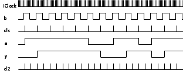
5.3 TIMER
function
The third source of clock signals is the TIMER
function, which also has one or two logic inputs – each with an
optional clock input.
The output generated by the TIMER
function are of signal type imm
timer and are generated in precisely the same way and at
the same time as clock
pulses from a CLOCK
function with the same inputs. timer
pulses differ from clock
pulses in the way they are used. Input parameters of type timer
are followed by an optional delay parameter, which may be a constant
value or an arithmetic expression (if missing a value of 1 is used).
The current value of the delay expression is read on the rising edge
or change of the associated input, and the result n
is used to count timer
pulses. The output is changed by the n'th
timer pulse after the
changing input. Use of a clock
rather than a timer
changes the output of a function on the next clock
after a change in input. If the delay value n
of a timer call is 0 -
or on the falling edge of a logic input for a function other than the
SH, CHANGE
or switch function -
the output is changed immediately by the next iClock.
For a SH, CHANGE
or switch function the
input is usually arithmetic and those functions are timed on all
changes of input, even if they are a logic input, which is possible
for the CHANGE
function.
imm
timer TIMER(bit in,
clock c); or
imm timer
TIMER(bit in1, clock
c1, bit in2, clock c2);
imm
timer tim = TIMER(b); // ‘tim‘ on the rising edge
of b
// clocked by next ‘iClock’(default)
imm
bit z = D(a,
tim, 3);// D flip-flop
clocked by ‘tim‘,
// turn on delayed by 3 ‘tim‘
pulses,
// immediate turn off clocked by ‘iClock‘
The following diagram shows the behaviour of a
TIMER generated timer
for different length's of input 'a'
relative to the timer
'tim'
pulses:
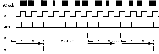
A D
flip-flop clocked with a timer
produces a function with turn on delay. If the logic input
to such a delay element turns off before the delay time is up, the
output never turns on. This is a very useful function to implement
time-outs, which are notoriously difficult to implement by
conventional means.
5.4
TIMER1 function
The fourth source of clock signals is the TIMER1
function, which is very similar to the normal TIMER
function. The signal type generated is imm
timer – the same as the type generated by a normal
TIMER. The only
difference is the way in which a 0 delay and the falling logic input
is handled, when a timer,
generated by the TIMER1
function controls a clocked function. A 0 delay is handled like a
delay of 1 – turn on is at the next timer
pulse. On the falling edge of the input the output is clocked on the
next timer pulse,
rather than by the next iClock,
which is the case for TIMER
generated timer signals
unless the input is to an SH,
CHANGE or switch
function, in which case the falling edge is also timed – just like
for the TIMER function.
A TIMER1 generated
timer, used with a
delay of 1 (or 0), functions identically to a CLOCK
generated clock signal,
except there is a small, but significant amount of overhead in
handling timer signals.
For this reason CLOCK
functions are to be preferred – their use is very fast.
imm
timer TIMER1(bit in,
clock c); or
imm timer
TIMER1(bit in1, clock
c1, bit in2, clock c2);
imm
timer ti1 = TIMER1(b); // ‘ti1‘ on the rising edge
of b
// clocked by next ‘iClock’(default)
imm
bit z1 = D(a, ti1, 3);// D flip-flop clocked by
‘ti1‘,
// turn on delayed by 3 ‘ti1‘ pulses,
//
turn off clocked by next ‘ti1‘
The following diagram shows the different turn-off
handling for a TIMER1
generated timer (in the
shaded area):
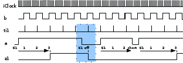
CLOCK,
TIMER and TIMER1
functions have optional clock inputs, which may come from other CLOCK
or TIMER functions. All
CLOCK, TIMER
or TIMER1 outputs are
synchronous with their input clock(s). This absolute synchronisation
is an important aspect of the robust performance of clocked immediate
C applications. The cascading of clocked functions allows the
realization of many useful applications.
6 Inputs and Outputs
6.1
Built-in Inputs
There are a number of inputs, which have such
universal significance, that they are implemented in the run time
system.
6.1.1
iClock
There is a built-in immediate
clock with the name iClock.
This clock runs at the highest system rate. The name iClock
is built-in and may be used as defined above in Section5.1.
Because secondary clocks either use iClock
by default, or another clock that is eventually clocked by iClock,
all clocks (and timers) are synchronous with iClock.
The execution of immediate logic is triggered by some input,
which causes evaluation of follow up statements, until no more
changes occur. iClock
generates a clock pulse after every such burst of activity in the
logic. iClock has the
same significance for immediate logic as the end of the
program cycle in a conventional PLC. The main difference is, that for
a conventional PLC all statements are executed for each program
cycle. For immediate logic only the changes triggered by one
or at most a few simultaneous inputs are executed for each program
cycle. This typically takes a few microseconds at most for a modern
processor. There are support tools which can measure and display this
time in microseconds.
6.1.2
End of Initialization
The rising edge of TX0.0
is guaranteed to be the first input to the system and can be used for
initializing user constructs. It is high for the remainder of the
program (forever as far as applications are concerned)
TX0.0 EOI,
off during initialization, then always on
6.1.3
Notification of a received line of standard input
Keyboard or other input received from standard
input (stdin)
causes an interrupt every time a line terminated by a carriage return
has been received. This interrupt causes iC input TX0.1
to pulse hi for one iClock
period. The data in the line is available in the global C
array char
iC_stdinBuf[].
TX0.1 Notification
of a received line of standard input
6.1.4 Timing inputs
To allow programs to work with real time, the
following timing inputs have been provided:
TX0.2 1
millisecond // requires a 1 kHz Kernel
TX0.3 10 milliseconds //
standard 100 Hz Linux Kernel
TX0.4 100 milliseconds // for the
remaining timers
TX0.5 1 second
TX0.6 10 seconds
TX0.7 60
seconds or 1 minute
These inputs can be used to generate clocks, which
are synchronous with real time. For example:
imm
clock clk100ms = CLOCK(TX0.4); // every 100 milliseconds
6.2
External Inputs and Outputs
Input and Output names in iC follow the
IEC-1131 standard. Inputs start with the letter I,
outputs with the letter Q.
These are followed by a second letter which defines the type of the
input or output. X
defines a byte of 8 bit I/O variables. B
defines a numerical byte I/O variable, W
a 16 bit word I/O and L
a 32 bit long word I/O variable. The 2 capital letters are followed
by a number, which defines the address index of the variable in the
I/O field. For
bit I/O variables the address is followed by a full stop and a number
in the range 0 to 7, marking the bit address of the actual bit
variable in the addressed I/O byte. The maximum
address index that can be used depends on the implementation of the
driver and the underlying hardware. Addresses in the I/O field may be
used for bit, byte, word or long word I/O. If all of these are in the
same physical address space, care must be taken not to overlap
different types of I/O. In the case 16 and 32 bit word I/O variables
the byte addresses used must be on a 16 bit word or a 32 bit long
word boundary respectively. The iC compiler can generate
warnings if I/O fields overlap. In the default case, each size
variable is assumed to be in its own address space and the address of
each variable is simply in index into each of these address spaces.
6.2.1 Digital inputs
IX0.0 bit
0 of input byte 0 - pre-declared as imm bit
IX0.1 bit 1 of input
byte 0
IX0.2 bit 2 of input byte 0
IX0.3 bit 3 of input byte
0
IX0.4 bit 4 of input byte 0
IX0.5 bit 5 of input byte
0
IX0.6 bit 6 of input byte 0
IX0.7 bit 7 of input byte 0
IX1.0 bit
0 of input byte 1
IX1.1 bit 1 of input byte 1
IX1.2 bit 2 of
input byte 1
IX1.3 bit 3 of input byte 1
IX1.4 bit 4 of input
byte 1
IX1.5 bit 5 of input byte 1
IX1.6 bit 6 of input byte
1
IX1.7 bit 7 of input byte 1
IX2.0 bit
0 of input byte 2
IX2.1 bit 1 of input byte 2
...
6.2.2
Digital outputs
QX0.0 bit
0 of output byte 0 - pre-declared as imm bit
QX0.1 bit 1 of output
byte 0
QX0.2 bit 2 of output byte 0
QX0.3 bit 3 of output byte
0
QX0.4 bit 4 of output byte 0
QX0.5 bit 5 of output byte
0
QX0.6 bit 6 of output byte 0
QX0.7 bit 7 of output byte 0
QX1.0 bit
0 of output byte 1
QX1.1 bit 1 of output byte 1
QX1.2 bit 2 of
output byte 1
QX1.3 bit 3 of output byte 1
QX1.4 bit 4 of
output byte 1
QX1.5 bit 5 of output byte 1
QX1.6 bit 6 of
output byte 1
QX1.7 bit 7 of output byte 1
QX2.0 bit
0 of output byte 2
QX2.1 bit 1 of output byte 2
...
6.2.3
Analog inputs
IB3 input
byte 3 - pre-declared as imm int (8 bit input)
IB4 input byte
4
IB5 input byte 5
IB6 input word 6
IB7 input byte 7
IW8 input
word 8 (16 bit input)
IW10 input word 10
IW12 input word
12
IW14 input word 14
IL16 input
long 16 (32 bit input)
IL20 input long 20
IL24 input long
24
IL28 input long 28
...
6.2.4 Analog outputs
QB3 output
byte 3 - pre-declared as imm int (8 bit output)
QB4 output byte
4
QB5 output byte 5
QB6 output byte 6
QB7 output byte 7
QW8 output
word 8 (16 bit output)
QW10 output word 10
QW12 output word
12
QW14 output word 14
QL16 output
long 16 (32 bit output)
QL20 output long 20
QL24 output long
24
QL28 output long 28
...
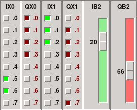
iCbox
The IEC-1131 names above define the physical addresses of
inputs and outputs in the I/O field. Standard practice for PLC I/O
electronics is to package I/O units in narrow plug in units, which
are labeled as shown on the right. The iCbox simulated
I/O widget emulates this scheme, showing the relationship of physical
addresses to their IEC-1131 names.
For more readable applications it is highly
recommended, that alternate descriptive names are defined for
IEC-1131 input and output names. This would normally be done in a
table of alias assignments at the start of an iC program. One
advantage of this scheme is, that if an input or output is physically
moved to another I/O pin, only 1 statement in the source needs to be
changed.
It was common practice at one factory automation
company that I worked for in Australia to run large bunches of
unlabelled wires from plant switches and actuators to the PLC
connection field. The only identification was grey for inputs and
brown for outputs as well as some other colours for analog inputs and
outputs. All these wires were randomly terminated at the PLC. The
first action when commissioning was to activate each switch in the
plant and note which input came up at the programming unit. Similarly
for the outputs. Then an alias table was written into the program and
from then on everything worked according to the PLC program, which
was written in terms of descriptive I/O names. This procedure saved a
large amount of time of tedious labelling, which also tends to be
error prone.
imm
bit waterLo, motorOn, heaterOn;
imm int waterTemp, motorSpeed;
waterLo =
IX1.3; // these statements define aliases
waterTemp = IB2; //
which produce no run-time overhead
QX10.2 =
motorOn; // here the IEC-1131 names are the
QX10.3 = heaterOn; //
aliases, which is appropriate
QW8 = motorSpeed; // for outputs
IEC-1131 I/O variable names are pre-declared as
immediate variables in iC program code, but they are not
defined in embedded C code. Only variables declared with an
imm bit, imm
int, immC bit
or immC int statement
are defined in C code as immediate variables. If I/O variables
must be accessed in C code the declared alternative alias
names must be used. This is another reason for defining descriptive
aliases for I/O variables early in the program design phase.
7 User defined immediate Function Blocks
User defined
immediate functions are commonly called function blocks in the
PLC world, because they act more like functional blocks or templates
rather than functions in the instruction flow sense, where a function
evaluates a sequence of instructions whenever it is called. An
immediate Function Block is a separate immediate
subsystem with immediate parameters which are its inputs and
outputs from other section of the immediate system, optional
internal immediate variables, which must be declared inside
the Function Block and an optional immediate return value,
which may be used like any other immediate value – in an expression
– assigned to an immediate variable or used as an input parameter
in a built in function or function block call. Only standard IEC-1131
I/O variables may be used in a Function Block without being declared,
although they may only be used as inputs, since any assignment to an
I/O variable such as QX0.0 inside a Function Block would lead to a
multiple assignment, once the Function Block is used more than once.
Another way to look at an immediate Function Block is like a
higher level or LSI integrated circuit, which has connections into
the system and provides a certain complex functionality with many
internal components and connections.
7.1 immediate Function Block Definition
An immediate Function Block must be defined
before it is used. Since the definition of a Function Block does not
itself generate any C Code on compilation it can be and
usually is defined with its code body in a header file, if multiple
source files are used for a project. For small projects with a single
source file Function Blocks can be defined at the start of the source
file.
immediate Function Block definitions are
very similar to C functions, although there are significant
differences in detail. The definition of an immediate Function
Block consists of a return value type, a Function Block name, a comma
separated parameter list in parentheses and a function body in curly
braces, e.g.
imm
bit fall(bit f, clock c) { this = RISE(~f, c); }
The return value may be one of 5 types:
imm
bit
imm int
imm clock
imm timer
imm void // which
means no value is returned
The imm
modifier is mandatory for the return type – it identifies an
immediate Function Block Definition syntactically. The Function Block
name can be any valid name starting with a letter followed by any
number of alphanumeric characters or underscores. A leading
underscore is possible, but should be avoided. The name must be
distinct from all other immediate variable names in a project. The
individual formal parameters in the parameter list must be of the
following 4 types:
imm
bit // or simply bit // imm is implied
imm
int // or int
imm clock // or clock
imm timer //
or timer
It is also possible to specify immC
bit and immC int
Arrays in the formal parameter list as follows:
immC
bit bb[10] // or bit bb[10] // immC is implied
immC
int aa[] // or int aa[] // size is optional
The imm
modifier (or immC for
arrays) is optional for parameters in a parameter list. The variable
declared is nevertheless immediate. Parameters may be either input
value parameters, in which case only their type is written in the
list or the parameter may be an immediate output to which a value
from the Function Block is to be assigned. In this case the type of
the parameter must be preceded by the keyword assign.
assign imm bit // or assign
bit
Array parameters cannot be assigned. If the size
in square brackets is left out for an array parameter, that position
can be filled by an array of any size – there is one drawback –
no indexed array references to that array can be made in the iC
code of the Function Block.
The body of a Function Block is one or more immediate statements
defining the functionality of the block encoded in curly braces.
Immediate variables internal to the function must be declared before
use in the Function Block. Parameter names and internal variable
names are in a separate name space for each function block, which is
also separate form the global name space. If a Function Block is not
imm void the body must
contain a return
statement. The semantics of the return
statement is the assignment to the variable to which the Function
Block is assigned, when it is called. This variable, which is
identified by the keyword this,
may be used in other expressions inside the Function Block. The
preferred way to write the return statements is:
this = some + immediate +
expression; // preferred return syntax
The usual C
syntax may
also be used, but does not make the action as clear:
return some + immediate +
expression; // deprecated earlier syntax
The return statement need not be the last statement in the
Function Block definition – its position does not influence when it
is executed – that is controlled purely by changes in the values of
the variables making up the return statement – something
which holds for all immediate statements. This situation is
more clearly expressed by the assignment to this.
An imm void Function
Block has no this
variable, may not contain a return
statement and may not be assigned when called.
Each assign
parameter must be on the left side of an assignment statement in
the Function Block. The values of assign
parameters may be used inside the Function Block. Each variable
declared inside the Function Block must also be assigned in the
Function Block. Variables declared extern
outside or inside the Function Block may not be assigned to inside
the Function Block. As is the case with I/O variables (which are
implicitly extern). extern
variables may only be used as values inside the Function Block. They
may not be declared again as local inside the Function Block.
Variables declared extern
in a function may be declared after the definition of the Function
Block in the iC code following the definition. This declares
that the variable will be assigned in this module. A variable with
the same name as an extern
variable may be declared locally in another Function Block, but it is
a different formal variable local to that Function Block.
All immediate statement types –
assignments, if else,
switch,
Built in Functions and other user defined Function Block calls may be
used in Function Block definitions. Function Blocks may be nested to
any depth as long as Function Blocks are used, which have been
previously defined. This implies that Function Blocks cannot be
called recursively, either directly or indirectly. Function Blocks
may be very simple one line definitions or complex systems with
hundreds of parameters. Several examples follow:
The SRX flip-flop is built into the compiler, but
defined in just this way during initialisation of the compiler. In
the latest version of the compiler, all but the most primitive built
ins, are defined as Function Blocks.
/*
SRX flip-flop defined as a function block */
imm
bit srx(imm bit set, imm clock scl,
imm bit res, imm clock
rcl)
{
this = SR(set & ~res, scl, res & ~set, rcl);
}
The CountClk function adds 'increment'
to 'this' for every occurrence
of 'clk':
imm
int CountClk(imm clock clk, imm int increment)
{
this =
SH(this + increment, clk);
}
The CountBit function adds 'increment'
to 'this' for every rising
edge of 'step':
imm
int CountBit(imm bit step, imm int increment)
{
this =
CountClk(CLOCK(step), increment); // nested call
}
The SelectClk function selects either a 100 ms or
a 1 second clock with variable 'second':
imm
clock SelectClk(imm bit second)
{
this = CLOCK(TX0.4 &
~second | // 100 ms
TX0.5 & second ); // 1 second
}
The following function block ADConvert assigns the
conversion of int val to 8
assign bit variables b0
to b7 passed as parameters
(imm is implied for value and
assign parameters).
/*
Analog to digital conversion of a byte value */
imm void
ADConvert(int val, // input parameter
assign bit b0, // output
parameters
assign bit b1,
assign bit b2,
assign bit
b3,
assign bit b4,
assign bit b5,
assign bit
b6,
assign bit b7,
)
{
b0 = val & (1 <<
0); // assignments to outputs
b1 = val & (1 << 1);
b2
= val & (1 << 2);
b3 = val & (1 << 3);
b4
= val & (1 << 4);
b5 = val & (1 << 5);
b6
= val & (1 << 6);
b7 = val & (1 << 7);
}
Note: the parameter list may have a trailing comma
before the closing parentheses. This is generally the case for comma
separated lists in iC and makes it easier to edit the lists
and copy parameters when written vertically, which is useful for
large parameter lists.
The iC compiler builds a template of the
Function Block, replacing each parameter and internally declared
variable by the name of the Function Block followed by a '@' and the
formal parameter or declared variable name. This strategy ensures a
private name space for each Function Block. When called, the template
is copied, with each formal parameter replaced by its real parameter
and internally declared variables replaced by the formal name with
the '@' replaced by an underscore '_' followed by an instance number
and another underscore. The instance number scheme ensures that there
is no clash of compiler generated variable names (even for separately
compiled modules).
7.2
immediate Function Block Call
An immediate Function Block is called in a
similar fashion to a C function, again with some significant
differences. In practice immediate Function Blocks are not
called. When the compiler encounters a Function Block call, the
pre-compiled Function Block, which is like a template, is copied,
with all calling parameters replacing the formal parameters in the
template. The resulting network of nodes will then be used at
run-time like the network of nodes produced from all other immediate
statements.
If an imm void
function is encountered it looks like a subroutine call:
ADConvert(IB1,
QX0.0, QX0.1, QX0.2, QX0.3,
QX0.4, QX0.5, QX0.6,
QX0.7,
);
This statement will assign bits 0 to 7 of IB1
to QX0.0 to QX0.7
whenever IB1
changes.
A Function Block with a return value must
either be assigned to a suitable variable or else it must be used as
a value of a suitable type in an expression or in a parameter list.
An imm bit Function
Block may be used as an imm int
value and vice versa – appropriate conversion takes place. imm
clock and imm timer
Function Blocks can either be assigned to correctly declared clock
or timer variables or
else used as a clock
or timer
value in a parameter list.
/*
count every rise of IX1.0 */
imm int count =
CountBit(IX1.0, 1);
/*
selects 1 sec when IX1.7 is on else 100 ms */
imm
clock clk = SelectClk(IX1.7);
Real parameters of type imm
int and imm bit
may be mismatched with their formal parameter types – value and
assign parameters in the call will be forced to their formal type.
assign parameters of
type imm clock and imm
timer must match – so must a value parameter of type imm
timer. Real immC
Array parameters are only the name of a previously declared immC
Array of the same type as the formal parameter. The size must also
match unless the formal parameter did not specify a size.
The handling of formal imm
clock parameters is more complex, allowing the use of
default clocks. Positions for formal imm
clock parameters which do not immediately follow another
formal clock parameter are handled as follows:
The position may be filled by a real imm
clock parameter.
The position may be filled by a real imm
timer parameter followed by an optional imm
int delay (if delay is left out it will be set to 1).
The position may be left out altogether, in
which case the next clock or timer parameter on the right separated
by at least one non clock parameter will be replicated for the
position. If there is no real clock parameter following on the
right, iClock will be
used.
On the other hand the second of two consecutive
formal clock parameters must be matched by a real clock or by a real
timer parameter optionally followed by an imm
int delay parameter. If the first of the formal clock pair
is not matched by a real clock or timer parameter, it and all
unmatched formal clock parameters to the left will be set to iClock.
Real timer
parameters for formal timer
parameters cannot be extended by a delay – the delay used is
determined in the Function Block with delay(s) associated with the
use of the formal timer
parameter in the code of the Function Block.
These rules for optional clock parameters are the
same as for the clocked built-in functions D,
SR, SRR,
SH, SHR,
SHSR,
RISE, CHANGE,
CLOCK, TIMER
and TIMER1 as well as
for the if and switch
functions.
The following are calls of the SRX()
Function Block with two formal clock parameters – one each for set
and reset and the ST()
function block with two consecutive formal clock parameters – one
optional for set and the second a non optional delayed self reset
timer or clock.
imm
clock c = CLOCK(IX1.1), clk = CLOCK(IX1.2);
imm
timer t = TIMER(IX1.3);
imm bit s, r;
imm bit m1 =
SRX(s, c, r, clk); // uses individual clocks
imm bit
m2 = SRX(s, t, 3, r, t, 5); // individual timer delays
imm
bit m3 = SRX(s, r, clk); // one clock for s and r
imm
bit m4 = SRX(s, r, t, 5); // one timer for s and r
imm
bit m5 = SRX(s, c, r); // default iClock for r
imm
bit m6 = SRX(s, iClock, r, clk); // must specify iClock
here
imm bit m7 = SRX(s, r); // default iClock for
both
imm
bit m8 = ST(s, c, t, 5); // clock c for s - t is not
optional
// because it fills 2nd formal clock
imm
bit m9 = ST(s, t, 5); // iClock for s - t is not optional
7.3 Parcel Sorter
The following example sortm28.ica
is a controller for a full scale application which required all the
space and speed resources of a PLC in the mid 80's. This project for
a parcel sorting system for the Australian Railways prompted the
author to look at alternate event driven systems for machine control.
The program is meant to control 4 high speed belts
moving at 5 metres/second generating independent strobe pulses for
every 15 mm movement of the belt. That means a strobe pulse every 3
ms. Each belt is normally equipped with 32 destination gates spaced
12 strobe pulse apart and open for 10 strobe pulses (in practice this
must be 72 strobe pulses or more).
This implementation was written as an iCa
language file, which can be scaled to any number of gates per belt.
As mentioned before, that code is fairly obscure and in coding this,
the iC code in the expanded version sortm28.ic
was written first (for only 3 gates). The iCa version shows
the full use of FOR
loops, IF ELSE code
selection and Macros.
The compiled iC program sortm28.ic
shows a version with only 8 destination gates. It consists of 164
Gate nodes, 631 links and 5 C functions consisting mostly of 1
line of C code each. It makes use of the TIMER
clock function, which is meant to step the timer tick
for every increment of the belt (in the original parcel sorter this
was obtained from a toothed wheel on the drive shaft). TIMERs
are very efficient, because parallel delays are handled
simultaneously by the one TIMER
by storing deltas in a list of timed events and counting down only
the delta at the head of the list. This can be seen in action in the
traces produced by GTKWave shown at the end of this example.
/********************************************************************
*
* Parcel
sorter control - using analog memory for destinations
*
*******************************************************************/
use
strict;
%define
GATES 8 // number of gate destinations per belt
%define
GATES_2 ((GATES-1)/2)
%define
GATE_OFFSET 12
%define
GATE_FACTOR "34 / 3" // 11.333 no parentheses
%define
GATE_OPEN 10
/********************************************************************
* Step
timer
*******************************************************************/
imm
timer tick = TIMER(TX0.4, ~TX0.4);
/********************************************************************
* Destination
selection inputs
*******************************************************************/
FOR
(J = 0; (1<<J) < GATES; J++) {{
imm
bit inp[J] = IX[(1<<J)/8].[(1<<J)%8]\
FOR
(I = (1<<J)+1; I < GATES; I++) {{
IF
(I & (1<<J)) {{ // uses every 2nd input
[I%8
== ((1<<J)&7) ? " |\n\t\t" : " |
"]IX[I/8].[I%8]\
}}\
}};
}}
imm
bit trans = RISE(
IX0.0\
FOR
(I = 1; I < GATES; I++) {{[I%8==0?" |\n\t\t":" |
"]IX[I/8].[I%8]}});
/********************************************************************
* Generate
analog value of destination
*******************************************************************/
imm
int dest = [GATES > 1 ? "inp0" : "0"]\
FOR
(J = 1; 1<<J < GATES; J++) {{ + inp[J]*[1<<J]}}; //
dest =
/********************************************************************
* Generate
delay along sorting belt.
* This
delay value changes every time one of the destination
* selection
inputs 'IX0.0 - IX[(GATES-1)/8].[(GATES-1)%8]' is activated.
* This
delay is used to set a delay timer immediately.
* NOTE:
GATE_FACTOR_ can be a fractional factor by putting it in
* double
quotes
*******************************************************************/
imm
int del = GATE_OFFSET + dest * [GATE_FACTOR]; // del =
/********************************************************************
* As
parcels travel along the sorting belt there have to be a
* number
of simultaneous delay timers 'pt' - one for each group.
* Worst
case is a delay timer per gate if parcels are all for
* the
final destination and placed on the belt as fast as possible.
*
* A
timer should only be used, if the timers in the previous
* groups
are already running. That makes simultaneous parallel
* timers
for each parcel input possible. The same applies to the
* logic
opening the gates, which may also happen simultaneously
* if
several timers happen to finish simultaneously.
*******************************************************************/
FOR
(I = 0; I < GATES; I++) {{
imm
bit xt[I];
imm
bit tr[I] = SR(trans & ~tr[I]\
FOR
(J = I-1; J >= 0; J--) {{[J%8==7?" &\n\t\t":" &
"]tr[J]}}, xt[I]);
imm
bit dt[I] = RISE(tr[I]);
imm
bit pt[I] = D(tr[I], tick, del);
xt[I]
= tr[I] & pt[I]\
FOR
(J = I-1; J >= 0; J--) {{[J%8==7?" &\n\t\t":" &
"]~pt[J]}};
imm
int ma[I] = SH(dt[I] ? dest : ma[I]);
}}
/********************************************************************
* Output
gates - selected via imm int busa and immC bit array openGate[]
*******************************************************************/
imm
int busa = xt[0] ? ma[0]\
FOR
(I = 1; I < GATES; I++) {{[I%4==0?" :\n\t\t":" :
"]xt[I] ? ma[I]}} : 0;
imm
bit trig = xt[0]\
FOR
(I = 1; I < GATES; I++) {{[I%8==0?" |\n\t\t":" |
"]xt[I]}};
immC
bit openGate[[GATES]];
%{
static
int temp;
%}
if
(trig) {
openGate[temp
= busa] = 1;
}
else {
openGate[temp]
= 0; /* temp is changed on the next rising trig */
}
FOR
(I = 0; I < GATES; I++) {{
imm
bit gate[I] = ST(openGate[[I]], tick, GATE_OPEN);
}}
FOR
(I = 0; I < GATES; I++) {{
QX[I/8].[I%8]
= gate[I];
}}
The compiled iC program
sortm28.ic shows a
version with only 8 destination gates. This code uses an immC
bit array openGate[]
to select the final gate opening mono-flops, which is very efficient.
The generated C code consists of 164 Gate nodes, 631 links and
5 C functions consisting mostly of 1 line of C code
each.
/********************************************************************
*
* Parcel
sorter control - using analog memory for destinations
*
*******************************************************************/
use
strict;
/********************************************************************
* Step
timer
*******************************************************************/
imm
timer tick = TIMER(TX0.4, ~TX0.4);
/********************************************************************
* Destination
selection inputs
*******************************************************************/
imm
bit inp0 = IX0.1 | IX0.3 | IX0.5 | IX0.7;
imm
bit inp1 = IX0.2 | IX0.3 | IX0.6 | IX0.7;
imm
bit inp2 = IX0.4 | IX0.5 | IX0.6 | IX0.7;
imm
bit trans = RISE(
IX0.0
| IX0.1 | IX0.2 | IX0.3 | IX0.4 | IX0.5 | IX0.6 | IX0.7);
/********************************************************************
* Generate
analog value of destination
*******************************************************************/
imm
int dest = inp0 + inp1*2 + inp2*4; // dest =
/********************************************************************
* Generate
delay along sorting belt.
* This
delay value changes every time one of the
* destination
selection inputs 'IX0.0 - IX0.7' is activated.
* This
delay is used to set a delay timer immediately.
* NOTE:
GATE_FACTOR_ can be a fractional factor by putting it in
* double
quotes
*******************************************************************/
imm
int del = 12 + dest * 34 / 3; // del =
/********************************************************************
* As
parcels travel along the sorting belt there have to be a
* number
of simultaneous delay timers 'pt' - one for each group.
* Worst
case is a delay timer per gate if parcels are all for
* the
final destination and placed on the belt as fast as possible.
*
* A
timer should only be used, if the timers in the previous
* groups
are already running. That makes simultaneous parallel
* timers
for each parcel input possible. The same applies to the
* logic
opening the gates, which may also happen simultaneously
* if
several timers happen to finish simultaneously.
*******************************************************************/
imm
bit xt0;
imm
bit tr0 = SR(trans & ~tr0, xt0);
imm
bit dt0 = RISE(tr0);
imm
bit pt0 = D(tr0, tick, del);
xt0
= tr0 & pt0;
imm
int ma0 = SH(dt0 ? dest : ma0);
imm
bit xt1;
imm
bit tr1 = SR(trans & ~tr1 & tr0, xt1);
imm
bit dt1 = RISE(tr1);
imm
bit pt1 = D(tr1, tick, del);
xt1
= tr1 & pt1 & ~pt0;
imm
int ma1 = SH(dt1 ? dest : ma1);
imm
bit xt2;
imm
bit tr2 = SR(trans & ~tr2 & tr1 & tr0, xt2);
imm
bit dt2 = RISE(tr2);
imm
bit pt2 = D(tr2, tick, del);
xt2
= tr2 & pt2 & ~pt1 & ~pt0;
imm
int ma2 = SH(dt2 ? dest : ma2);
imm
bit xt3;
imm
bit tr3 = SR(trans & ~tr3 & tr2 & tr1 & tr0, xt3);
imm
bit dt3 = RISE(tr3);
imm
bit pt3 = D(tr3, tick, del);
xt3
= tr3 & pt3 & ~pt2 & ~pt1 & ~pt0;
imm
int ma3 = SH(dt3 ? dest : ma3);
imm
bit xt4;
imm
bit tr4 = SR(trans & ~tr4 & tr3 & tr2 & tr1 &
tr0, xt4);
imm
bit dt4 = RISE(tr4);
imm
bit pt4 = D(tr4, tick, del);
xt4
= tr4 & pt4 & ~pt3 & ~pt2 & ~pt1 & ~pt0;
imm
int ma4 = SH(dt4 ? dest : ma4);
imm
bit xt5;
imm
bit tr5 = SR(trans & ~tr5 & tr4 & tr3 & tr2 &
tr1 & tr0, xt5);
imm
bit dt5 = RISE(tr5);
imm
bit pt5 = D(tr5, tick, del);
xt5
= tr5 & pt5 & ~pt4 & ~pt3 & ~pt2 & ~pt1 &
~pt0;
imm
int ma5 = SH(dt5 ? dest : ma5);
imm
bit xt6;
imm
bit tr6 = SR(trans & ~tr6 & tr5 & tr4 & tr3 &
tr2 & tr1 & tr0, xt6);
imm
bit dt6 = RISE(tr6);
imm
bit pt6 = D(tr6, tick, del);
xt6
= tr6 & pt6 & ~pt5 & ~pt4 & ~pt3 & ~pt2 &
~pt1 & ~pt0;
imm
int ma6 = SH(dt6 ? dest : ma6);
imm
bit xt7;
imm
bit tr7 = SR(trans & ~tr7 & tr6 & tr5 & tr4 &
tr3 & tr2 & tr1 & tr0, xt7);
imm
bit dt7 = RISE(tr7);
imm
bit pt7 = D(tr7, tick, del);
xt7
= tr7 & pt7 & ~pt6 & ~pt5 & ~pt4 & ~pt3 &
~pt2 & ~pt1 & ~pt0;
imm
int ma7 = SH(dt7 ? dest : ma7);
/********************************************************************
* Output
gates - selected via imm int busa and immC bit array openGate[]
*******************************************************************/
imm
int busa = xt0 ? ma0 : xt1 ? ma1 : xt2 ? ma2 : xt3 ? ma3 :
xt4
? ma4 : xt5 ? ma5 : xt6 ? ma6 : xt7 ? ma7 : 0;
imm
bit trig = xt0 | xt1 | xt2 | xt3 | xt4 | xt5 | xt6 | xt7;
immC
bit openGate[8];
%{
static
int temp;
%}
if
(trig) {
openGate[temp
= busa] = 1;
}
else {
openGate[temp]
= 0; /* temp is changed on the next rising trig */
}
imm
bit gate0 = ST(openGate[0], tick, 10);
imm
bit gate1 = ST(openGate[1], tick, 10);
imm
bit gate2 = ST(openGate[2], tick, 10);
imm
bit gate3 = ST(openGate[3], tick, 10);
imm
bit gate4 = ST(openGate[4], tick, 10);
imm
bit gate5 = ST(openGate[5], tick, 10);
imm
bit gate6 = ST(openGate[6], tick, 10);
imm
bit gate7 = ST(openGate[7], tick, 10);
QX0.0
= gate0;
QX0.1
= gate1;
QX0.2
= gate2;
QX0.3
= gate3;
QX0.4
= gate4;
QX0.5
= gate5;
QX0.6
= gate6;
QX0.7
= gate7;
The
following are the 5 generated C code fragments. The macro
iC_MV(1) accesses a logical
value on the generated link array. Fragment (5) are the two C
code snippets for the if
part and the else part.
iC_LAI(2,
temp = iC_AV(3) , 0, 1)
performs an indexed assignment to a logical immC
variable (2), which is openGate[],
which is indexed by iC_AV(3),
which gets an analog value from (3), which is busa
(and which is also assigned to temp).
The last number 1 is
the logical value assigned – thereby setting the ST()
mono-flop for the selected gate. It is 0
in the else part.
One can
see from this that even for int
nodes the execution time for one event is going to be no more than a
few microseconds.
*******
C CODE ************************
124
125
static int temp;
126
#line
202 "init.c" /* in pre-compiled function block SHR */
202 (1)
return iC_MV(1)?iC_MV(2):iC_MV(3);
#line
32 "sortm28.ic"
032 (2)
return iC_MV(1)+iC_MV(2)*2+iC_MV(3)*4;
042 (3)
return 12+iC_MV(1)*34/3;
118 (4)
return iC_MV(1)?iC_MV(2):iC_MV(3)?iC_MV(4):iC_MV(5)?iC_MV(6):
118
iC_MV(7)?iC_MV(8):iC_MV(9)?iC_MV(10):iC_MV(11)?iC_MV(12):
118
iC_MV(13)?iC_MV(14):iC_MV(15)?iC_MV(16):0;
128 (5)
{
129
iC_LAI(2, temp = iC_AV(3) , 0, 1);
130
}
130
{
131
iC_LAI(2, temp , 0, 0); /* temp is changed on the next rising
trig */
132
}
To start sortm28
to produce VCD files execute the following on the command line:
ctrl-C when done
iCserver -kr 'sortm28
-v sortm28.vcd' 'iCbox IX0,,250 QX0'
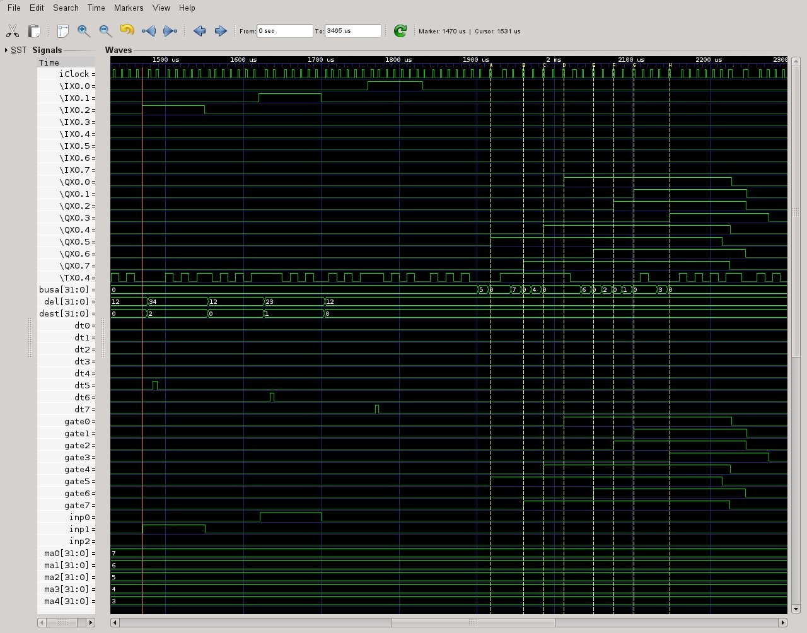
This
also starts an iCbox with
8 digital
inputs IX0.0 - IX0.7, which in this case are push-buttons with a 250
ms turn-off delay. They only need to be clicked to send a 250 ms
on/off
pulse
to the application.
It also implements 8
digital
outputs
QX0.0 – QX0.7. The iCbox man-page provides
more details for configuring
push-buttons,
which were only introduced with version 1.31.
Each
input starts a timer varying from 12 ticks for IX0.0 to 91 ticks for
IX0.7. At the end of their respective timer delays the outputs QX0.0
to QX0.7 will turn on for 10 ticks.
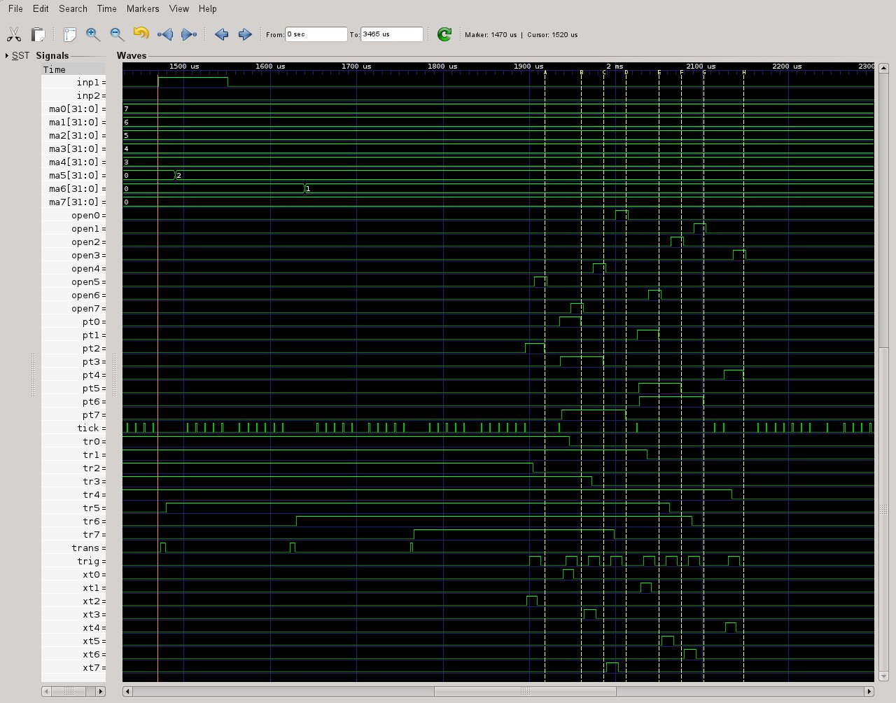
Fig.
1 GTKWave
traces of all nodes of
sortm28.ic
with gtkwave
sortm25.vcd sortm25.sav
For this set of traces IX0.7 to IX0.0 were clicked
one after the other so that the respective delays caused the outputs
to turn on nearly simultaneously. At the top we can see IX0.2 IX0.1
and IX0.0 transferring 2 1 and 0 to dest and ma5 to ma7 and the
computed delays 34 28 and 12 to del. This starts delays in tr5 to
tr7. When the delays terminate they are transferred via
openGate[busa] to start the output delays gate0 to gate7, which are
aliased by QX0.0 to QX0.7.
8 The iC
run-time model
The
iC compiler immcc parses the statements of an iC
source, e.g. example.ic and produces a C file example.c
and optionally a listing file example.lst. The C file
is compiled by a C compiler to produce example.o
(example.obj under Windows), which is linked with the iC
runtime library libict.so (or libict.a)
to produce an executable example (example.exe under
Windows).
*********************
SOURCE example.ic *********************
imm
bit a = IX0.0 & ~IX0.1 | ~IX0.0 & IX0.1;
QX0.0
= a;
imm
bit b = IX0.2 ^ IX0.3;
imm
bit d = ~IX0.2 & ~IX0.3;
imm
bit mem = LATCH(b, d);
QX0.1
= mem;
*********************
LISTING example.lst *******************
001 imm
bit a = IX0.0 & ~IX0.1 | ~IX0.0 & IX0.1;
a_1
---| a
a_2
---|
IX0.0
---& a_1
IX0.1
~ ---&
IX0.0
~ ---& a_2
IX0.1
---&
002 QX0.0
= a;
a
---| QX0.0 X
003 imm
bit b = IX0.2 ^ IX0.3;
IX0.2
---^ b
IX0.3
---^
004 imm
bit d = ~IX0.2 & ~IX0.3;
IX0.2
~ ---& d
IX0.3
~ ---&
005 imm
bit mem = LATCH(b, d);
mem
---% mem
b
---%
d
~ ---% *
006 QX0.1
= mem;
mem
---| QX0.1 X
*******
NET TOPOLOGY ****************************************
IX0.0
< ~a_2& a_1&
IX0.1
< a_2& ~a_1&
IX0.2
< b^ ~d&
IX0.3
< b^ ~d&
QX0.0
| X
QX0.1
| X
a
| QX0.0|
a_1
& a|
a_2
& a|
b
^ mem%
d
& ~mem% *
mem
% mem% QX0.1|
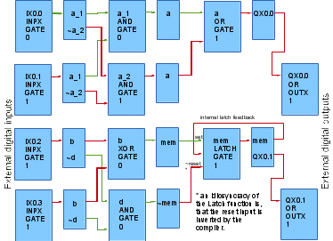
Fig. 2 Graph representation of the iC program
example.ic
********************* C
OUTPUT CODE example.c **********************
static Gate * l_[];
/*******************************************************************
* Gate list
*******************************************************************/
Gate IX0_0 = { 1,
INPX, GATE, 0, "IX0.0", 0, 0, 0 };
Gate IX0_1 = { 1,
INPX, GATE, 0, "IX0.1", 0, 0, &IX0_0 };
Gate IX0_2 = { 1,
INPX, GATE, 0, "IX0.2", 0, 0, &IX0_1 };
Gate IX0_3 = { 1,
INPX, GATE, 0, "IX0.3", 0, 0, &IX0_2 };
Gate QX0_0 = { 1,
OR, OUTX, 0, "QX0.0", 0, &l_[0], &IX0_3 };
Gate QX0_1 = { 1,
OR, OUTX, 0, "QX0.1", 0, &l_[3], &QX0_0 };
Gate a = { 1,
OR, GATE, 0, "a", 0, &l_[6], &QX0_1 };
Gate a_1 = { 1,
AND, GATE, 0, "a_1", 0, &l_[10], &a };
Gate a_2 = { 1,
AND, GATE, 0, "a_2", 0, &l_[14], &a_1 };
Gate b = { 1,
XOR, GATE, 0, "b", 0, &l_[18], &a_2 };
Gate d = { 1,
AND, GATE, 0, "d", 0, &l_[22], &b };
Gate mem = { 1,
LATCH, GATE, 0, "mem", 0, &l_[26], &d };
/*******************************************************************
* Connection lists
*******************************************************************/
static Gate * l_[] = {
/* QX0.0 */ &a, 0, 0,
/* QX0.1 */ &mem, 0, 0,
/* a
*/ &a_2, &a_1, 0, 0,
/* a_1
*/ &IX0_0, 0, &IX0_1, 0,
/* a_2
*/ &IX0_1, 0, &IX0_0, 0,
/* b
*/ &IX0_3, &IX0_2, 0, 0,
/* d
*/ 0, &IX0_3, &IX0_2, 0,
/* mem
*/ &mem, &b, 0, &d, 0,
};
The C output of the immcc
compiler consists mainly of initialised data definitions, which
describe a directed graph of vertices or nodes and edges joining the
nodes. Each node of this graph corresponds to an expression in the iC
program - they are called Expression nodes. The graph produced by the
compiler is directed towards the inputs, which are called sources in
graph theory (see Fig 2 above). This means that a list of the inputs
to each Expression is associated with a particular Expression node.
These are the edges of the graph. This direction represents the way
in which expressions are usually evaluated in a procedural strategy
following the flow of instructions – consecutive instructions read
the values of all input variables of an expression and arithmetic or
bit operators, acting on adjacent operands, determine the result.
Programmers are used to think about expressions this way.
The run-time model for iC
is best visualized by thinking of expressions as digital
or analog IC components, interconnected as in the above graph.
The listing file represents all Expression nodes generated by the
compiler in this way (see LISTING above). Each time the output of one
of these components changes, that change will act on any inputs to
which that output is connected.
For immediate C, the compiled graph, whose
edges point towards the inputs of each node, is loaded into memory
and as a first step, all edges are reversed. This means, that each
Expression node is associated with a list of follow on Expression
nodes, for which the current Expression result is an input. What this
means is, that when a particular Expression node changes its value,
then all the expressions for the Expression nodes on its target list
should be re-evaluated (see NET TOPOLOGY above)
8.1
Combinatorial immediate actions
Combinatorial
immediate actions are the evaluation of arithmetic or bit
expressions, which excludes the full evaluation of any embedded
clocked functions. Expressions contain immediate variables
combined with operators, which describe a (possibly) changed result
when an input variable to the expression changes. Although the
evaluation of an expression takes a certain (small) amount of time –
both for hardware IC's and for iC expressions, conceptually we
are dealing with a mathematical statement, whose evaluation describes
a change of state – an operation, which does not necessarily take
any time. One completed scan of the combinatorial action list is such
a conceptually timeless combinatorial set of state-changing actions.
To
implement this scheme, the iC run-time uses Expression nodes,
which can be linked into action lists and which store the old value
of the node – that is the value before the expression is
re-evaluated - as well as the new value after re-evaluation. If these
values are equal after a change of input and re-evaluation, no
further action is taken – follow on nodes will not change either,
because of this particular change of input. If the new value is
different from the old value, the Expression node is said to “fire”
(a term borrowed from Petri Nets). When this happens, the Expression
node is linked to the end of an action list. While on an action list,
the old and new values are kept in the node. Arithmetic nodes are
implemented like this – each node is associated with an arithmetic
expression, which is evaluated as a snippet of C code, each
time one of it's inputs changes.
Bit
expression nodes are implemented differently. Each logical GATE node
implements just one bit expression of type AND, OR, XOR or LATCH.
(GATEs of type LATCH implement the single gate FORCE function). The
algorithm used for AND, OR and LATCH GATEs is majority logic. In
majority logic, the number of '1' inputs on a gate are counted. If
this number exceeds a certain threshold, the output is '1' –
otherwise it is '0'. The only difference between the AND, OR and
LATCH function is the threshold. This means, that for all three types
of GATEs, only the initialisation of the threshold is different –
the same counting operation at run-time holds for all three. This
algorithm is very similar to biological neurons, which prompted
the idea.
-
|
a
|
b
|
c
|
'1' count
|
OR
threshold 1
|
AND
threshold 3
|
LATCH
threshold 2
|
|
0
|
0
|
0
|
0
|
0
|
0
|
0
|
|
1
|
0
|
0
|
1
|
1
|
0
|
0
|
|
0
|
1
|
0
|
1
|
1
|
0
|
0
|
|
1
|
1
|
0
|
2
|
1
|
0
|
1
|
|
0
|
0
|
1
|
1
|
1
|
0
|
0
|
|
1
|
0
|
1
|
2
|
1
|
0
|
1
|
|
0
|
1
|
1
|
2
|
1
|
0
|
1
|
|
1
|
1
|
1
|
3
|
1
|
1
|
1
|
For
the OR function, the threshold is always 1, no matter how many inputs
the GATE has. Only when no inputs (<1) are '1' is the output '0' –
otherwise it is always '1'.
For
the AND function, the threshold is set to the number of inputs the
GATE has. When all inputs are '1' the output is '1' – otherwise it
is '0' (at least one input is '0').
The
three input FORCE function described in section
4.2 is shown here in more detail and with the 'off' input
inverted.
FORCE(arg1,
on, ~off)
-
|
arg1
|
on
|
~off
|
FORCE(arg1,on,~off)
|
|
0
|
0
|
0
|
0
|
|
1
|
0
|
0
|
0
|
|
0
|
1
|
0
|
0
|
|
1
|
1
|
0
|
1
|
|
0
|
0
|
1
|
0
|
|
1
|
0
|
1
|
1
|
|
0
|
1
|
1
|
1
|
|
1
|
1
|
1
|
1
|
This
is the same truth-table as the 3 input majority LATCH GATE with a
threshold of 2. Only the 'off' input needs to be inverted.
Each
GATE node has a signed byte member gt_val, which counts input changes
and provides the logic output. The sign bit of gt_val is the bit
value of the output. Thus -1, -2, -3 … -127 are all a '1'
output.
+1, +2, +3 … +127 are all a '0' output. These values are
normalised to -1 for '1' and +1 for '0' when doing majority logic.
Because of this counting algorithm with a signed byte, the number of
inputs to simple AND and OR GATEs are limited to 127. (Should more
inputs be required a final post-processor of the compiler splits
those large GATEs into several smaller ones). GATEs are initialised,
so that all inputs are logically '0' and gt_val is initialised to +1
for OR gates, +n for AND gates (where n is the number of inputs) and
+2 for LATCH gates (where the number of inputs is always 3). Since
all inputs and outputs are thus initially '0' they can only change to
'1'. A change to '1' causes the numerical value of '1' – namely -1
to be added to gt_val of the target. If this change causes gt_val to
be 0, the gate is said to fire. This results in the numeric value
being added again resulting in gt_val now being -1 and the master
GATE action being executed. For GATE nodes the master action is
simply linking the node, which holds the updated logical value in
gt_val to the output list. This propagates the change in bit value.
The following very compact piece of code implements this algorithm:
if ((gp->gt_val +=
val) == 0) { /* gate function */
gp->gt_val =
val; /* step past 0 */
(*masterAct[gp->gt_fni])(gp, iC_o_list); /* master action */
}
To
implement logical inversion each logical GATE node has two null
terminated target lists – the first list is for actions which are
non-inverting – the second list is for actions which are inverting.
Before the second list is scanned, the source logic value is inverted
by negating val from +1 to -1 or -1 to +1 and adding this negated
value. Arithmetic nodes have only one null terminated target list.
val
= (op->gt_val < 0) ? -1 : 1; /* logic value from source node
*/
lp
= op->gt_list /* lp points to 1st target list
*/
while ((gp = *lp++) != 0) { /* scan non-inverted
targets */
if ((gp->gt_val += val) == 0) { /*
gate function */
gp->gt_val = val;
/* step past 0 */
(*masterAct[gp->gt_fni])(gp,
iC_o_list); /* master action */
}
}
/* lp points to 2nd target list
*/
val = -val; /* invert logic value
*/
while ((gp = *lp++) != 0) { /* scan inverted targets */
if ((gp->gt_val += val) == 0) { /* gate function
*/
gp->gt_val = val; /*
step past 0 */
(*masterAct[gp->gt_fni])(gp, iC_o_list);
/* master action */
}
}
/* normal
and inverting actions completed
*/
The
logical XOR function is handled differently again. Each change of
input from 1/0
or 0/1 causes the target to be
negated from +1 to -1 or -1 to +1 and fire immediately. XOR GATEs are
initialised to +1 (logical '0') for all inputs '0', which is the
initial condition. Logical inversion is the same as above, although
the action is the same for both non-inverting and inverting target
lists (negate the target and fire).
There
are four types of action list to which Expression nodes may be linked
when they “fire” during the combinatorial scan:
o_list,
to which logical GATE nodes are linked.
a_list,
to which arithmetic expression nodes are linked.
c_list
or another clock
list, to which clocked function Master nodes are linked.
s_list,
to which external output expression nodes are linked.
To
simplify the description, o_list and
a_list are discussed
here as a single combinatorial action list. For the combinatorial
scan, the Expression node at the head of the combinatorial
action list is taken and the target list(s) of that node is scanned,
using the code on the previous page. Every Expression node on that
target list is re-evaluated, using the new value of the Expression
node just taken from the combinatorial action list, with the result
that some Expression nodes on the target list may change and “fire”.
These nodes are then linked to the end of an appropriate action list.
The old value of the original Expression node is assigned the new
value at this time and it is unlinked from the head of the
combinatorial action list –
that node is now no longer active. The combinatorial scan is
continued with the new head of the combinatorial
action list until the list is empty.
There
is another possibility. The target Expression node is already
somewhere on some action list, which means its value has recently
changed, but the new value has not yet been transmitted to any follow
on nodes. Now another Expression node acts on this particular
Expression node and re-evaluation changes its value a second time.
There are two possibilities:
The
latest value is still different from the old value (the value it had
when its target list was last scanned and follow on nodes were
re-evaluated). In this case the Expression node is left on the
action list with a (possibly) changed new value.
Re-evaluation
changes the new value back to the old value. This situation is
called a “glitch”. The Expression node is now unlinked
from the action list and becomes inactive, before it acts on any
follow on nodes. The reasoning behind this strategy is, that any
temporary change, which occurs through one path of the graph, which
is immediately undone by some expression on another path, should not
influence the output. This handling of glitches and subsequent
clocking, which is guaranteed to ignore glitches, make hardware IC
circuits and iC programs really robust.
Initially
nodes can only get on the combinatorial action list due to changes of
external inputs (sources) of the graph. Normally such a change will
percolate through paths of the graph to one or more external output
nodes (sinks). At this stage the combinatorial action list is usually
empty.
Cycles
are allowed in the graph – they occur when there is feedback in the
iC program. Such feedback is often necessary for implementing
designs, but the designer should control it.
Feedback may result in situations, where continuous
oscillations occur. When this happens, certain nodes will change to a
new value – act on some follow on node(s), which will then change
the original node back to the old value after it has acted on other
nodes. This means the action list will never get empty. If nothing
were done about this, the iC program would lock up the
processor.
Continuous
oscillations at the Expression node level should not be part of a
design and this situation results in a warning message at run-time.
Nevertheless for testing purposes, such a program should be able to
run without locking up the processor. To achieve this, a strategy is
used, where the number of times a particular node may be re-evaluated
in one scan is limited – usually to three. This is the maximum
oscillator count, which may be changed with the -n <count>
command-line switch. If the maximum oscillator count for any
node is exceeded after re-evaluation of that node, it is not linked
to the normal combinatorial action list, but to an alternate action
list. This way the current combinatorial action list will always get
empty within a finite number of actions. At the end of the scan, when
the current combinatorial action list does become empty, the
combinatorial action list and the alternate action list are swapped.
At this point in time the iC run-time process goes to sleep,
waiting for new input.
When
a new external input interrupts the system, the associated input node
is linked to the now current swapped combinatorial action list and
triggers a new scan. Together with the new input and its follow up
events, the oscillating nodes, which were linked to the (then
alternate) list during the previous scan, will be evaluated again.
This way the oscillations do get re-evaluated over and over – but
at a rate which does not block the processor. This is similar to the
way oscillations manifest themselves in a hardware IC circuit – a
large but finite number of oscillations will occur between any two
consecutive external input events. In iC programs, this number
has been reduced to three, which does not change the way these
oscillations affect other parts of the program. In practice it has
been found useful to make this an odd number, so that rising and
falling edges alternate for digital oscillations.
All this takes
care of what is called “combinatorial logic” for digital systems.
Sequencing requires different mechanisms and they are provided in the
iC language by clocking and clocked functions.
8.2
Clocked immediate actions
As mentioned
before, clock signals in iC are best thought of as timeless
pulses, whose occurrence marks the separation of one clock period
from the next along the time axis. For these purposes actions in the
iC run-time occur in two phases – combinatorial immediate
actions, which were described in the previous section and
clocked immediate actions, which are always
master-slave actions, which occur during the clock phase.
Clocked
functions contain one or more Master nodes and exactly one Slave
node. Master nodes are expression nodes – just like the ones
described in the previous section, except their output does not act
directly on follow on expression nodes and therefore are not linked
to the current combinatorial action list when they “fire”. There
is a Master node for every non-clock input parameter to a function.
Associated with each such non-clock parameter is a clock parameter.
If it is not mentioned explicitly in the parameter list, it has a
default value – usually iClock. Master nodes which
“fire”, are linked to the clock list associated with the clock
parameter for the particular Master node.
Clock lists are similar to action lists – they may be empty or have
one or more expression nodes linked to them. Clock lists are
associated with the Slave node of a clock function or “driver”.
There is one special clock list called c_list,
which is associated with the default iClock
and which is scanned every time a combinatorial scan completes unless
c_list
is
empty. This clock scan marks the occurrence of iClock.
In other words combinatorial scans and clock scans alternate until
both the current combinatorial action list and c_list
are
empty. For the purpose of synchronisation, it is important to
remember that during the combinatorial scan new nodes are evaluated
and linked to one of the following:
the current
combinatorial action lists o_list or a_list –
described in the previous section.
c_list
or another clock list – which receive Master nodes of clocked
functions.
s_list
– which receives those Expression nodes whose action is external
output.
During
the clock scan only c_list
is
scanned. There are several different clock actions, but they only
involve the value of a Master node modifying the value of a Slave
node and some side effect associated with the clocked function. The
different clock actions are:
Clocking of a
logical or arithmetic function – the new value of the Slave node
is determined by the slave action of the Master node on the Slave
node, which is linked to the current combinatorial action list if
its value changes – it becomes a new logical or numeric output,
which will not have any effect on inputs until after the
current clock scan has completed.
Clocking
of a CLOCK or TIMER driver function – the clock list associated
with the CLOCK or TIMER function Slave node, which
contains the
accumulated Master
nodes linked to that
clock list, is
linked to the end of
c_list.
This means, that the CLOCK or TIMER function has “fired” and the
slave
actions of the
Master nodes, which
have accumulated on its clock list will also be executed during the
current clock scan, since they are now on c_list.
Clocking
of a conditional if else
or switch
statement
function. Because
these functions execute C
code embedded in the iC
program, which may involve modifying logical or arithmetic immediate
variables, the actual execution of the C
code must be deferred until after completion of the clock scan. For
this purpose the Master
nodes of any conditional if
else or switch
statement
function are
unlinked from the
clock list and
linked to another action list – namely f_list.
The
scan of c_list
is always finite, since no new Master nodes
are added to any clock list during the clock
scan.
When the clock scan terminates a single scan of f_list
follows, unless f_list
is empty. The
start of the
f_list
scan
marks the end of a clock phase and the beginning of a new
combinatorial phase. After this another
combinatorial scan followed by a clock scan is done, because both
clocked slave actions and the f_list
scan may have generated new combinatorial actions.
8.3
Output actions
Finally,
when both the current combinatorial action list and c_list
are empty, a single scan of s_list
follows. During that scan the actual external output is performed.
Each bit output is
first distributed to an output byte and then the output bytes, words
and long words which have changed since the last cycle are either
output directly (currently only possible on a Rapberry Pi) or
transmitted via TCP/IP to iCserver, which distributes
them to their final output destinations, where they act physically.
At this point the process sleeps until it is interrupted by an
external or internal input.
8.4
Input actions
External inputs come from physical input device
drivers and are transmitted as bytes, words or long words again
either directly or via TCP/IP through iCserver, using
the same protocol as the output.
Most drivers
use TCP/IP as the transport protocol from and to the iC
run-time system and the final physical input and output device(s) in
the current implementation. This ensures, that no input or output is
lost during transmission. Nagle's algorithm is inhibited to ensure
immediate delivery. Other safe transmission systems can be used –
only the actual input and output driver software needs to be changed.
The
run-time system also recognises internal inputs which are mainly
interrupts from the processors real-time-clock used
for timing operations.
These are described in section
6.1.3.
External
and internal inputs interrupt the run-time system. Initially the
source of the interrupt is analysed and Input nodes are “fired”
for every changed input (and only those that have changed) and these
are linked immediately to the current combinatorial
action list. Then a new cycle is initiated starting with a scan of
the current combinatorial action list.
8.5
Input/Output network
The
network clients around iCserver
can comprise one or more iC
applications and any number of real
I/O drivers as well as iCboxes
and
iClift,
which simulate real I/O in the current implementation. Input and
output can be transmitted not only to and from iC
applications and iCboxes
but also between iC
applications. Since all of these elements can run on any processor in
a LAN or even in the Internet, this opens up interesting
possibilities for the iC
system.
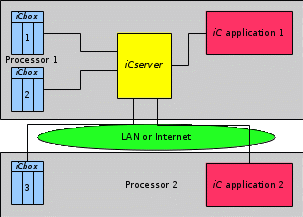
Fig. 3 Input/output
network
9 Compiler and Run-time
system
9.1
Compiler
The iC compiler immcc
generates C code with the extension .c
from iC source files with the extension .ic,
which is suggested for iC sources. It is also suggested, that
iC header files have the extension .ih.
For larger projects, several .ic
files may be compiled to .c
files, which are then compiled by cc to .o
files and linked with the dynamic library libict.so,
which contains the run-time code. This produces a finished
application, which can be run in an environment compatible with the
features of the run-time library. Alternatively the static library
libict.a can be used. This produces much larger code,
but does provide extensive debugging output from a running system.
The iCa pre-compiler immac
generates iC source files with the extension .ic
from iC with arrays (iCa) source files with the
extension .ica. The
shell script iCmake executes all these steps
automatically – it makes a complete iC application
from one or more iC and/or iCa sources.
9.2
Run-time libraries
There are several versions of the run time
library, depending on the hardware interfaces available for Input and
Output. The Demonstration libraries libict.so or
libict.a communicate their Input and
Output via TCP/IP, which provides a turnaround time of an input
change to the arrival of the corresponding output change in a lightly
loaded network of less than 1.7 milliseconds (measured on a Raspberry
Pi 2B). The uncertainty of load occurring in such a network forces
one to look at specialized bus systems for high speed applications.
Using direct I/O rather than TCP/IP 90 microseconds turnaround was
measured on the Raspberry Pi 2B.
Other libraries have been built for industrial
field bus systems. The library for InterBus-S
is complete and has been extensively tested with InterBus-S I/O
modules. A library for a proprietary high speed field bus system was
used for early tests and provided turnaround times of under a 100
microseconds on a 386 8 MHz processor. A CAN-Bus library is planned
and could be implemented at short notice.
9.3
Run-time environment and system
For any applications where hard real time
constraints are not a problem, the TCP/IP run-time system provides a
very flexible and easy to configure environment where Input and
Output may be distributed over a number of computers in a local area
network. The system consists of a server called iCserver
and a number of clients for which iCserver is the hub.
An iC application linked with the libict.so
library is one type of client, providing control in the system. The
other client types are Input and Output modules (or combined I/O
modules) and debugging tools.
iCserver has been implemented in
Perl, which is very flexible and fast enough to keep up with TCP/IP
traffic generated in a local area network. A faster C
implementation of iCserver is possible. The program
iCbox simulates Input/Output modules as Perl/Tk dialog
boxes for digital and analog inputs and outputs. For real inputs and
outputs iCbox can serve as a program template. Only the
translation of the I/O signals to a short network message for
transmission to the iCserver is necessary to port an
I/O device. This has been done with iCpiFace
for the Raspberry Pi. A simple and very compact protocol for passing
messages to and from the iCserver has been defined.
iClift is a simulation of the
physics and appearance of lifts in a building with IEC inputs sent to
an iC control application from simulated sensors and buttons
and using IEC outputs received from an iC control application
to initiate and stop simulated movement and to reset buttons. The
number of lifts and floors can be varied. iClift can be
used to test a variety of control strategies for lifts in a building.
The program iClive provides an IDE
for editing and debugging iC programs. It provides an
edit window, in which program text can be displayed and optionally
edited, searched, saved, made into runnable code, run and stopped.
When running and debugging an iC program, iClive
is a client of iCserver and indirectly of the running
iC program. In “Live” mode iClive
colours words in the program text according to the state of the node
named by a word – green/black
for bit 0, yellow/red
for bit 1, blue for
arithmetic variables, Rust
red for clocks and cadet
blue for timers. To be effective, the displayed text
must be either the source of the running iC program or
a text derived from that source, such as the compiler generated
listing, which shows all compiler generated extra nodes. Short
transients are extended to display for 50 ms – an idea taken from
the Hewlett Packard logic probe. The numerical value of a node is
also displayed when the cursor hovers over a word. With this colour
coded display of the statements of the iC program, it
is easy to follow the progress of execution and the related logic at
run time. "Live displays" are commonly used in programming
units for PLC's in industrial control environments to provide
debugging support. immediate C follows this example.
9.3.1
iCbox, iClive and iCman in action
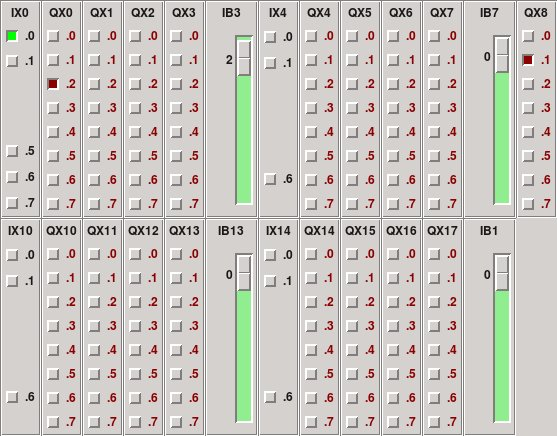
Fig. 4 iCbox as IO for
“sort32i” - IX0.0, QX0.2 and QX8.1 are “on” - the rest are
“off”. IB3 has a value of 3, othe analog inputs are 0.
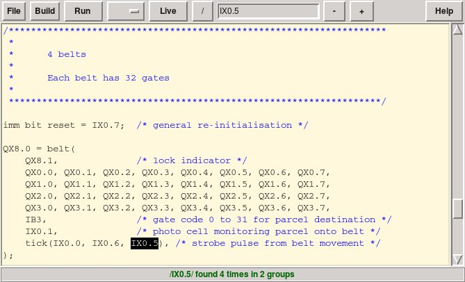
Fig. 5 iClive in EDIT mode with a
search for IX0.5 shown. The application “sort32i” is not running
– press “Run” and then “Live” to get to Fig. 6. - press
“Help” to get the man-page (see Fig. 7).
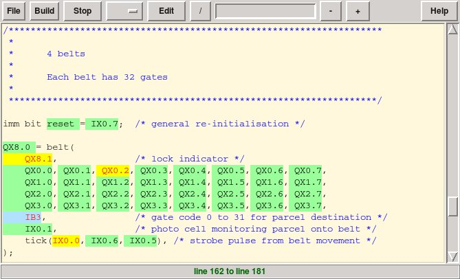
Fig.
6 iClive in LIVE mode - QX8.1, QX0.2 and IX0.0 are “1” -
the rest are “0”. IB3 is non-zero.
“sort32i” is running.
– it can be stopped by pressing the “Stop” button and/or
switched
to Edit mode by pressing the “Edit” button (see Fig.
5).
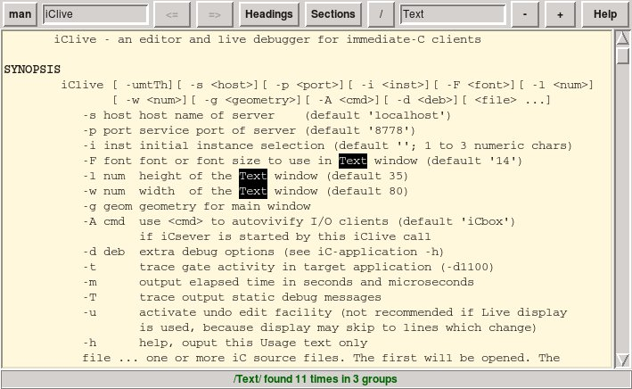
Fig.
7 iCman showing the start of the
man-page for iClive. A search for “Text” is
shown.
For command line use, a shell script iCmake
builds one or more applications from iC sources using
the compilers immac, immcc and the
libraries libict.so
or
libict.a.
The programs immac, immcc,
iCserver,
iCbox, iClive and iCmake
as well as each compiled and linked iC application
provide a generous help output with the -h switch option. Each of
these programs also has a full man page which may be viewed with
'man' in a Unix like environment or with iCman, a man
page viewer with interesting hyperlink, search and text magnification
features, much like a browser.
9.4
GTKWave Wave Analyzer
GTKWave (an open-source program) is an analysis
tool originally intended to perform debugging on Verilog or VHDL
simulation models. Except for interactive VCD viewing, it is not
intended to run interactively with simulation, but instead relies on
a post-mortem approach through the use of dump-files. Various
dump-file formats are supported:
(Extract from the GTKWave 3.3 Wave Analyzer User's
Guide) Use in the iC system is hereby gratefully acknowledged.
Since version 1.131 of the iC run-time a
VCD file and an associated SAV file can be generated by an iC
application by using the -v option. This allows the interactive or
post-mortem viewing of both logic and analog traces against a virtual
time scale. This time scale was chosen so that each sequential change
in any signal is 1 virtual microsecond. iClock cycles take up
2 virtual microseconds. Each new external input (Ixn.m, IBn, IWn ILn
or TX0.m) occurs on the next 10 virtual microsecond boundary.
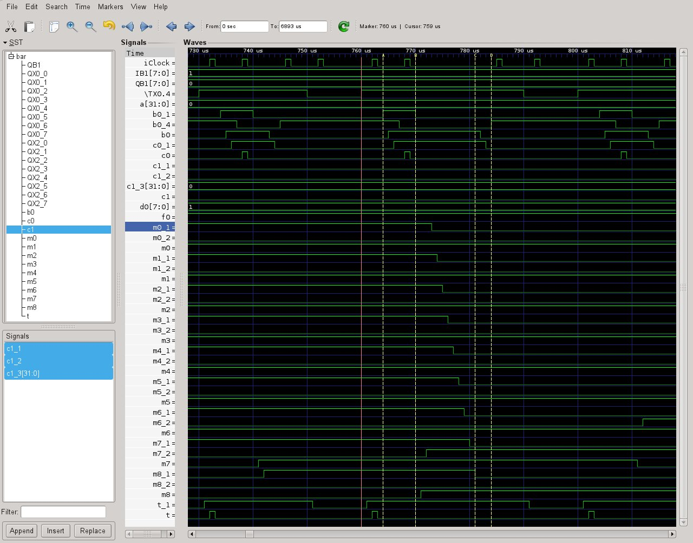
Fig.
7 GTKWave showing part of the running of the iC
application 'bar -v bar.vcd'.
iClock is shown as the top trace. The
auxiliary clock c0 and the timer t are in sync with iClock as
can be seen just before and after marker A. The rising edge of TX0.4
(the 100 ms timer) sets t_1, which in turn is the slave input to the
TIMER producing timer t (which occurs in the next iClock
phase). The following is an excerpt from the listing file bar.lst:
019 imm
timer t = TIMER(TX0.4);
t_1
T ---! t !
iClock
: ---| t_1 T
TX0.4
---|
025 imm
bit b0 = D(~b0 & f0, t, d0) | CHANGE(IX0.0 & ~f0);
b0_1
---| b0
b0_2
---|
b0_4
D ---# b0_1
b0_3
V ---> b0_2
iClock
: ---& b0_3 V
IX0.0
---&
f0
~ ---&
t
! ---& b0_4 D
IB1
A<---&
b0
~ ---&
f0
---&
026 imm
clock c0 = CLOCK(b0);
c0_1
C ---: c0 :
iClock
: ---| c0_1 C
b0
---|
035 imm
bit m7 = SR(~m8 & m6, m8 , c0);
m7_1
S ---# m7
m7_2
R ---#
c0
: ---& m7_1 S
m8
~ ---&
m6
---&
c0
: ---| m7_2 R
m8
---|
036 imm
bit m8 = SR(~m8 & m7, m8 & ~m0, c0);
m8_1
S ---# m8
m8_2
R ---#
c0
: ---& m8_1 S
m8
~ ---&
m7
---&
c0
: ---& m8_2 R
m8
---&
m0
~ ---&
(At marker A) D flip-flop b0_1 sets with the next
timer t tick, because d0 (alias IB1) is currently 1 (as seen in the
trace). This raises b0, which sets CLOCK slave c0_1 and lowers gate
b0_4 in that order.
Next (at marker B) iClock resets flip-flop
b0_1 because input b0_4 is now '0'. This is followed by clock c0
setting SR flip-flop m8 (slave m8_1 was set by ~m8 & m7 at the
previous clock c0). The setting of m8 sets slave gate m7_2 and resets
slave gates m0_1 to m8_1 (at marker C). This is followed by the
resetting of b0 (input b0_1 was reset earlier in this combinatorial
cycle). b0 in turn resets c0_1 and sets b0_4 (at marker D). This
finishes the combinatorial cycle and starts another iClock
which does nothing. The next action is the external TX0.4 resetting,
which resets slave gate t_1, which has no follow-up.
GTKWave is not part of the OpenSUSE Linux
distribution, but it can be easily installed with an RPM package from
the internet. Caveat: conversion of VCD files to LXT files with
'vcd2lxt' does not work satisfactorily. CLOCK
and TIMER events are
not converted. Therefore use VCD files only for iC.
10
Bibliography
[Aho86] Alfred
V. Aho, Ravi Sethi, Jeffrey D. Ullman
Compilers Principles,
Techniques, and Tools
Addison-Wesley Publishing Company 1986
[Davis01] John
Davis II, et al
Overview of the Ptolemy Project
University
of California, Berkeley 2001
[Johnson75] Stephen
C. Johnson
Yacc
– yet another compiler compiler
Computer
Science Technical Report 32,
Bell Telephone Laboratories, Murray
Hill, NJ, July 1975
[Johnston04] Wesley
M. Johnston, J. R. Paul Hanna, and Richard J. Millar
Advances
in Dataflow Programming Languages
ACM Computing Surveys, Vol.
36, No. 1, March 2004, pp. 1–34.
[Kernighan84] Brian
W. Kernighan, Rob Pike
The UNIX Programming
Environment
Prentice Hall, Inc. 1984
[Kernighan88] Brian
W. Kernighan, Dennis M. Ritchie
The C Programming
Language
Prentice Hall, Inc. 1988
[Kluge92] Werner
Kluge
The Organization of Reduction, Data Flow, and Control Flow
Systems
The MIT Press 1992
[Lent89] Bogdan
Lent
Dataflow Architecture for Machine Control
John Wiley &
Sons Inc. 1989
[Lidie02] Stephen
Lidie & Nancy
Walsh
Mastering
Perl/Tk
O'Reilly 2002
[McKeeman70] William
Marshall McKeenan et al
A
Compiler Genrator
Prentice
Hall, Englewood Cliffs, NJ, 1970
[Phister63] Montgomery
Phister, Jr.
Logical design of digital computers
John Wiley
& Sons, Inc. 1963
[Sharp85] John
A. Sharp
Data flow computing
Ellis Horwood Limited 1985
[Sparkes72] John
Sparkes, Ed.
The Heart of Computers
The Open University
Press 1972
[Srinivasan97] Sriram
Srinivasan
Advanced Perl Programming
O'Reilly 1997
[Wall00] Larry
Wall, Tom Christiansen & Jon Orwant
Programming
Perl
O'Reilly 2000
[Walsh99] Nancy
Walsh
Learning Perl/Tk
O'Reilly 1999
[Wulff72] John
E. Wulff
A Monitor for Real-Time-Control Systems
University
of New South Wales 1972
11 The
Author
John
E. Wulff studied Electrical Engineering at the University of New
South Wales in Sydney, Australia graduating in 1960. His first
professional experience was in the Telephone industry, developing
switching circuits with electro-mechanical relays but also with
vacuum tubes, cold cathode tubes and very soon with the emerging
transistors. In 1964 he spent 6 months in England, getting know-how
on a new family of switching circuits using germanium diodes and
transistors, but which already supported clocked flip-flops. These
had been developed at the BICC research laboratory near Hampton
Court, where John Sparkes had invented the principle of clocking a
few years earlier. With this experience, John Wulff was chief
designer for a special purpose computer with 100 kilobytes of
magnetic drum memory, 1 million transistors, 2.5 million diodes for
logic and 100,000 silicon controlled rectifiers for power output
drivers, switching 24 Volt rotary solenoids drawing up to 5 Amps.
This computer controlled a letter sorting system with 150 input
consoles and a throughput of 5 million letters a day. The system
worked reliably for 25 years at the Redfern Mail Exchange in Sydney.
Experience
with logic design based on integrated circuits followed. The
availability of mini computers led to an interest in programming. A
Master of Engineering Science Degree in Information Science at the
University of New South Wales provided a solid foundation for future
work as a Software Engineer. The design and implementation of a Real
Time Operating System (or Monitor, as it was then called), which
provided a task context switch in 15 machine instructions was the
content of his Masters Thesis [Wulff72], and later provided the basis
for some very fast industrial machine control systems with Data
General Nova mini-computers, whose instruction execution time was 6
microseconds.
In
the mid 80's John Wulff came in contact with PLC's. He was asked to
help during the commissioning of a PLC-system, controlling a parcel
sorting complex consisting of 100 standard conveyor systems and 4
high speed conveyors (2 metres/second) which had mechanical gates
along its length, to divert parcels. These high speed belts needed a
control resolution of 15 milliseconds, in which time a parcel had
moved 30 mm. Unfortunately the function blocks for the standard
conveyors, whose outputs hardly ever change once they are started,
executed 100 times, once for each of the conveyors, brought the total
cycle time of the PLC to over 1 second!! What to do? Fortunately the
PLC had just enough (8) interrupt inputs, to allow the implementation
of an event driven sub-system based on the assembler instruction set
of the PLC. This saved the company a lot of liquidated damages.
This
experience spawned the idea for an event driven PLC, which resulted
in the current iC system. Although this system is demonstrably
faster than a PLC with the same memory speed for any reasonable
application one can think of, it is difficult to compute a guaranteed
maximum response time. Since this is a requirement for hard real time
applications, iC was never accepted for industrial use. For a
PLC the maximum response time is simply the time to execute all
instructions making up the program, which is the cycle time of the
program. For an iC program this time can also be computed. For
a 10 MHz PC the execution time is about 2 microseconds per gate node
processed. The total number of gate nodes is provided in the listing
produced by the compiler. An iC program with 10,000 gate
nodes, which corresponds to a PLC program of approx. 32 kilobytes
would thus have a maximum response time of 20 milliseconds, if all
nodes were somehow fired simultaneously. This would be a good
response time for a PLC. In practice this can never happen and a
maximum response times of < 200 microseconds was measured on such
a 10 MHz machine. This corresponds to events which cause 100 follow
up nodes to fire. The typical number of follow up events is 7.
Assuming this figure is Poisson distributed the above assumption is
not unreasonable.
In
2013 the iC system was ported to the Raspberry Pi running
under Raspbian Linux. This computer is slow by current standards (700
MHz), but its size and I/O capabilities make it an ideal platform for
immediate C. A number of drivers have already been written for
real I/O devices connected to the Raspberry Pi (PiFace, PiFaceCAD
with others to follow).
The
complete system has been published under the Open Source GPL License.
With the current emphasis on Linux in embedded Systems, I see great
scope here for control systems based on the GPIO I/Os and other
peripherals of the Raspberry PI and other similar powerful
micro-processors using the language immediate C.
John
E. Wulff, BE, M EngSc – Bowen Mountain, Australia.
Appendix A
README
immediate C, iC rev 1.140
Copyright (C) 1985-2016, John E.
Wulff
All rights reserved.
This program is free software;
you can redistribute it and/or modify it under the terms of either:
a) the GNU General Public
License as published by the Free Software Foundation; either version
2, or (at your option) any later version,
OR
b) the "Artistic License"
which comes with this Kit.
This
program is distributed in the hope that it will be useful, but
WITHOUT ANY WARRANTY; without even the implied warranty of
MERCHANTABILITY or FITNESS FOR A PARTICULAR PURPOSE. See either the
GNU General Public License or the Artistic License for more details.
You
should have received a copy of the Artistic License with this Kit,
in the file named "Artistic". If not, I will be glad to
provide one.
You
should also have received a copy of the GNU General Public License
along with this program; if not, write to the Free Software
Foundation, Inc., 59 Temple Place, Suite 330, Boston, MA 02111-1307,
USA.
For
those of you that choose to use the GNU General Public License, my
interpretation of the GNU General Public License is that no iC
application falls under the terms of the GPL unless you explicitly
put said application source under the terms of the GPL yourself.
Furthermore, any object code linked with iC does not automatically
fall under the terms of the GPL, provided such object code only adds
definitions of subroutines and variables, and does not otherwise
impair the resulting interpreter from executing any standard iC
source. I consider linking in C subroutines in this manner to be
the moral equivalent of defining subroutines in the iC language
itself. You may sell such an object file as proprietary provided
that you provide or offer to provide the immediate C source, as
specified by the GNU General Public License. (This is merely an
alternate way of specifying input to the program.) You may also sell
a binary produced by compiling an iC source that belongs to you with
the iC compiler and linking it with the iC runtime library, provided
that you provide or offer to provide the immediate C source as
specified by the GPL. (The fact that the iC runtime library and your
code are in the same binary file is, in this case, a form of mere
aggregation.) This is my interpretation of the GPL.
If
you still have concerns or difficulties understanding my intent,
feel free to contact me (see my email at the end of this README)
Of
course, the Artistic License spells all this out for your
protection, so you may prefer to use that.
Acknowledgements
to Larry Wall, whose README I used as a template. and for Perl -
which is just GREAT.
Acknowledgements
to Nick Ing-Simmons for Perl/Tk - which is SMOOTH.
Acknowledgements
to Sriram Srinivasan for Msg.pm - which is COOL.
Acknowledgements
to the developers of GTKWave - which is POWERFUL.
Acknowledgements
to Linus Torvalds and the Open-Software community for Linux(R) -
which is SOMETHING ELSE.
----------------------------------------------------------------------------------
Notes for the installation of
iC rev 1.140
1) Pre-requisites.
You need the following on your system:
C
compiler # tested with gcc, MSC
Perl, Perl/Tk and Time::HiRes #
to build iC applications
Unpack
the iC-archive in a suitable working directory with:
tar
-xvzf icc_1.140.tgz
cd icc_1.140/src
2) Excute
the following:
configure
OR ./configure # if super user
To
make a Debug version do
makeAll
-gclS # OR
makeAll -qgclS # to suppress intermediate output
OR
to make a Release version do
make #
OR
make quiet # to suppress intermediate output
this
should build the following files without any errors
immcc #
the iC to C compiler
libict.a # the static
run-time library libict.so # the dynamic run-time library
3) To
compile and compare the test iC files in Test0 execute:
make
test # should output 'test OK'
4) To
install the iC-compiler, libraries and scripts execute the
following as super user:
sudo
make install ### Password ###
this
copies the executables to /usr/local/bin, the include file icg.h to
/usr/local/include, libict.a, libict.so to /usr/local/lib or
usr/local/lib64 and Msg.pm to /usr/lib/perl5/site...
sudo
make uninstall # remove all these files
5) To
use the Perl support programs, it is mandatory that you install the
Perl packages Tk804.029 or later and Time::HiRes unless they are
already installed on your system. Both can be found on the
internet. For Cygwin under Windows a special binary distribution of
Tk800.023 is included.
6) To
build and run the iC application "hello.ic" do
iClive
hello.ic # starts the IDE with hello.ic
press Build # displays
'hello' successfully built press Run # opens an iCbox with 1
button press button IX0.0 in iCbox
'Hello!
world' is output in the window iClive was started from
press
Live
The
word IX0.0 is coloured yellow/red, because IX0.0 is HI. When IX0.0
is pressed again to LO, the colour in the live display changes to
green/black, indicating LO.
press
File / Quit # 'hello' and iCbox are terminated
7)
A slightly bigger application is "simple.ic". Build and
run it with iClive. An iCbox with 16 inputs and 8 outputs is
started automatically. Explore the logic of the statements by
changing inputs and following the outputs in iCbox and the live
display in iClive.
8)
The application "bar.ic" uses flip flops to produce a bar
of running lights. The application also explores the use of
programmable time delays, giving some idea of the scope of the iC
language.
Running
'iClive bar.ic' as a separate process, while 'bar' is running, will
display the source listing (in the edit window), connects to
iCserver as an auxiliary client to receive updates of all variables
from the running iC program (bar). These updates will change
the colours of all words, which are immediate variables.
(green/black = 0, yellow/red = 1) This "live display"
shows the current state of logical relationships in visible
statements of the iC program. Arithmetic variables are
displayed in a balloon, when the cursor rests on a variable.
(Arithmetic variables have a blue background).
In
'Live' mode, when a "live display" is shown, the text is
read only. When the 'Edit' button is pressed 'iClive' is a full
featured editor. The edit facilities of this program are described
in the iClive man page under the Heading 'KEYBOARD BINDINGS' (press
Help button in 'iClive').
'iClive'
can use the Tk::TextUndo package, an extension of Tk::Text. This
allows undoing changes with the Ctrl-u key. (Control-u is <<Undo>>)
This is achieved by starting iClive with the -u option. Use this
option only for editing. In 'Live' mode the display is very jerky
with -u active.
9)
iCserver distributes TCP/IP messages between iC apps and iC
real and virtual I/O drivers.
10)
iCserver is usually started with the -a (auto-vivify) option, which
will start a simulated I/O iCbox for every input and output, every
time an iC application is started. Otherwise these must be
started manually, which can be tedious for large applications.
iCserver
-a & # auto-vivify iCbox for application simple # starts
iCbox with 3 sets of I/O
If
iClive is started first, it does all this automatically. It then
stops iCserver automatically when it quits. When iCserver stops it
stops all registered applications and I/O's.
11)
iC applications can of course be run without iClive. They do
need iCserver though, which every app starts automatically in
auto-vivify mode unless it is already running.
hello #
start hello + iCserver -ak + iCbox
OR hello -l # additionally
start iClive
type q # to stop hello, iCserver and iCbox
12)
Bernstein chaining. If several different iC applications, or
different instances of the same application are to be started
together, they must all run in parallel as separate processes (and
in parallel with iCserver, iCbox and iClive). This is difficult to
achieve with shell commands.
bar;
bar -i1 # does not start bar -i1 until bar stops
bar &;
bar -i1 # is a shell syntax error
neither
of which is what we want. Several apps started in a pipeline do
start in parallel, but we do not want the pipes between iC
apps. To achieve the desired result, Bernstein chaining has been
implemented with the -R option for every iC app and for all
iC drivers.
bar
-R bar -i1 # starts bar and bar -i1 in parallel
bar
-l -R bar -i1 -R bar -i2 -R bar -i3 # starts:
iCserver -z
-ak
iClive # from -l
bar -z -i1 -R bar -i2 -R bar
-i3
bar -z -i2 -R bar -i3
bar -z -i3
iCserver
starts: iCbox X0 B1 X2 # for bar
by auto-vivification iCbox
X0-1 B1-1 X2-1 # for bar -i1
iCbox X0-2 B1-2 X2-2 # for bar
-i2
iCbox X0-3 B1-3 X2-3 # for bar -i3
Only
the first app in the chain has keyboard input and can be stopped by
typing 'q'. This in turn stops iCserver, which stops all other apps
in the chain. (-z blocks keyboard input).
Chaining
is important for driver calls with real I/O arguments.
13)
Another powerful debugging tool is the GTKWave Wave Analyzer.
GTKWave
(an open-source program) is an analysis tool originally intended to
perform debugging on Verilog or VHDL simulation models. With the
exception of interactive VCD viewing, it is not intended to run
interactively with simulation, but instead relies on a post-mortem
approach through the use of dumpfiles. Various dumpfile formats are
supported: VCD: Value Change Dump. This is an industry standard file
format generated by most Verilog simulators and is specified in
IEEE-1364. (Extract from the GTKWave 3.3 Wave Analyzer User's
Guide) Use in the iC system is hereby gratefully acknowledged.
gtkwave-3.1.10-4.33.i586.rpm
was downloaded from the internet. To install gtkwave on OpenSUSE
Linux do:
sudo
rpm -i gtkwave-3.1.10-4.33.i586.rpm
For
other Linux distributions download and follow the instructions in
the internet to install GTKWave for those systems.
Since
version 1.131 of the iC run-time a VCD file and an associated
SAV file is generated by an iC application when run with the
-v option. This allows the interactive or post-mortem viewing of
both logic and analog traces against a virtual time scale. This time
scale was chosen so that each sequential change in any signal is 1
virtual microsecond. iClock cycles take up 2 virtual microseconds.
Each new external input (Ixn.m, IBn, IWn ILn or TX0.m) occurs on the
next 10 virtual microsecond boundary. To test this do:
simple
-v simple.vcd
# press IX0.0 to IX0.7 in iCbox one after the
other
# press IX0.0 to IX0.7 again one after the other
type
q # stop iCserver, simple, iCbox
This
writes simple.vcd and simple.sav
gtkwave
simple.vcd simple.sav # displays timing # for all non-extended
variables
A
more detailed example uses the running of 'bar -v bar.vcd' shown in
the iC manual iC.pdf and barx.sav, which is in the
distribution and which shows extra extended gates and markers used
in the description in the manual. barx.sav was generated by first
running gtkwave bar.vcd bar.sav - inserting extended variables from
modules, setting markers and then saving as barx.sav.
gtkwave
bar.vcd barx.sav
display
some extended variables
14)
A fairly varied example is sortm28.ica, which is described fully
under 7.3 'Parcel Sorter' in the iC.odt handbook. It produces good
GTKwave traces.
15)
I have included a script called 'iCstop' from my private toolkit.
It can be used effectively to kill iCserver when it is executing in
the background, which is appropriate for a server.
iCserver
&
iCstop iCserver # local copy of 'iCstop'
16)
To make executable applications from iC sources, use iCmake,
which is a shell script to compile iC sources into C
sources using the 'immcc' compiler. These in turn are compiled and
linked into an executable iC application (currently using gcc
- this can be changed). Various options allow partial compilation
and generation of listings.
iCmake
-h OR iCman iCmake # gives a lot of help
17)
The LibreOffice 3.3.1 document doc/iC.odt (or doc/iC.pdf,
doc/iC.html) is the handbook for the iC Programming Language.
It opens the way to use "immediate C" fully.
18)
There is a generous help output for every tool in the 'iC
Project' initiated with the -h option. Each generated iC
application also has a help output:
hello
-h # list available options
The
extra options shown in the help output explain how to connect to
iCserver on another computer in a LAN with the -s option - or with a
different port number with -p. Very detailed debugging output,
showing the change of state of every event in the system is
available for the Debug version of the iC system with -t.
(Suppressed for Release version)
19)
There are 'man' pages for all the tools used in the 'iC
Project'. These can be viewed with the normal 'man' command under
Linux or with 'iCman'. The man page viewer 'iCman' has some nifty
web-browser features to view and search man pages - try it with
'iCman iCman'.
Lots
of success
John
E. Wulff 2016.01.23 <immediateC@gmail.com>
Main
development is on openSUSE (currently 13.1) and perlTk Tk804.031,
which provides fast live updates in iClive. They seem to be as fast
as with Tk800.24. A Test with Knoppix and Tk804.25, which is still
available for Debian also provided good performance with fast live
updates in iClive.
In
Sept 2013 I ported immediate C to the Raspberry Pi running Raspbian.
There were no problems, except the gcc ARM compiler defaults to
'unsigned char'. Since the core of the iC system is based on
signed arithmetic with char's, I had to change the declaration of
those to 'signed char'. The following package had to be installed
with sudo apt-get install: perl-tk. The following packages are
optional but useful: bison, flex, gtkwave, rcs and vim. (2 weeks
with an old vi was punishment enough). After that all tests passed.
During
2014 I wrote drivers for direct I/O for the PiFace and PiFaceCAD
digital interfaces for the Raspberry Pi - see man page for iCpiFace
and README.RPi.
Appendix
B README.RPi
Raspberry Pi Development and
Run-time Environment
For building the immediate C
system on a Raspberry Pi, the development environment for the
Raspbian distribution of Linux is just as powerful as for Linux on a
PC. It natively supports gcc 4.6.3 and perl 5.14. For the iC
system Perl/Tk, bison and flex are also required. Although one can
do without bison and flex, since the pre-compiled C files are
distributed with the tar ball, it is useful to have them for a
complete distribution build. All of these tools are available with
apt-get. I also rely on vim for writing and maintaining code, ddd
for debugging, GTKWave for visualizing and RCS for source code
control. These are also available for the Raspberry Pi.
The iC system consists of
the immediate C compiler 'immcc', the static library
'libict.a', which has debugging support and the shared library
'libict.so', which does not. On top of this are the Raspberry Pi
specific I/O drivers iCpiFace,
iCpiPWM and
iCtherm. The 'immcc' compiler has no
Raspberry Pi specific code. The libraries have driver extensions
which are optionally compiled if an armv CPU is used. To
build the various components 'make' must be called with different
options. The auxiliary script 'makeAll' looks after this (see the
'makeAll' man page). 'makeAll' tests which processor it is running
on and defines RASPBERRYPI if it runs on an armv CPU. This
means the calls to make are identical on all processors (currently
x86_64, armv6l and armv7l) The Makefile also looks after storing the
libraries in the correct directory - /usr/local/lib or
/usr/local/lib64 for 64 bit processors. To make things even easier
the script 'm' builds various versions very simply. (I used to have
a colleague who found 'make' too long to type).
m # build immcc and libict.a
with debugging support m -cl # same as m
m -clS # also build
the shared library without debugging
m -P # build the I/O
program iCpiFace and iCgpioPUD m -i # build immcc and libict.a and
install everything
m -clSi # build and install everything
On top of this all iC
programs have to be re-compiled if 'immcc' has been modified or
simply re-linked if only the libraries have changed. The script
'iCmake' looks after this. It's arguments are one or more iC
files ending in .ic (or .ica, in which case more arguments are
usually needed).
iCmake -sA *.ic
# re-link
all iC files in the current directory with the
# static
library libict.a for debugging
# the -A switch shows ALIASES
as live data in iClive
iCmake
-f *.ic
# force re-linking with the shared library libict.so
It may be worthwhile mentioning
at this point, that the iC apps behaved very strangely when I
did a complete 'apt-get dist-upgrade' recently. Everything worked
again when I re-linked everything to the upgraded system libraries.
Build times of the complete iC
compiler as well as static and shared libraries on the RPi B and B+
versions, which have an ARM6 processor running at 700 MHz and 500
Mbytes of memory, are 3 min 50 sec (230 seconds).
Build time for the RPi 2B
version, which has a four core ARM7 processor running at 800 MHz and
1 Gbyte of memory, is 1 min 14 sec (74 seconds).
My development machine is a
Compaq Presario CQ57 with a two core Intel Pentium CPU 8940 (x86_64)
running at 2.0 GHz with 4 Gbytes of memory running openSUSE 13.1
Linux. It runs gcc 4.8.1 and perl 5.18.
Build time for the Compaq PC is
10.8 seconds, which makes a ratio of 21-7-1 for the 3 machines.
Execution times for 'make test' times for the 3 machines are 330
seconds, 117 seconds and 17.9 seconds respectively, which is a ratio
of 18.5-6.5-1, which is similar.
The build times mentioned above
are for a complete distribution clean followed by compiling the iC
and C yacc files and a lex file followed by 31 C
compiles and 3 link compiles. Also 14 man page files are re-compiled
from POD-text attached directly to the relevant sources. All
relevant files are also installed. During normal development only
one or a few files are recompiled, which only takes seconds, even on
the slow RPi B.
I have written, compiled and
debugged all the RPi specific drivers on a RPi B connected via ssh
-X to a number of console windows on the Compaq PC. That way I get
the fastest turnaround time. The only program which does not run
well in a SSH window is ddd. It works perfectly in a native window
on the RPi X system.
I also mount the central Compaq
PC via nfs on each RPi. This allows archiving of modified sources on
the Compaq PC and distributing modified files to other RPi's on the
network.
The immediate C IDE program
iClive is both a text editor for writing new iC
programs or for updating them as well as a debugger for displaying
the state of immediate bit, int, clock and timer variables in real
time by colour changes of the variables in the program text or in
balloon windows for analog values. iClive also has a
button for executing the usual File operations, a button to build an
iC executable, a button to switch between different instances
of the current program, a button to switch between Edit and Live
mode and a button for a powerful search facility. The Edit window
provides a modest amount of syntax highlighting. Nevertheless I
mostly use vim for editing iC programs and iClive
only for debugging. I provide 3 files: ic.vim, filetype.vim and
wulff.vim to provide syntax highlighting for iC files in vim.
The command line tool 'iCmake' generates executables from iC
source file ending in .ic or .ica (see man pages for more details).
The graphical program iClive
and a number of other support widgets (most importantly iCbox)
run perfectly on the Linux PC when started remotely on a RPi in a
ssh -X window. This makes testing networked iC programs on
several RPi's very easy.
Raspberry Pi Direct I/O with
GPIO's
The ARM processors have GPIO
signals, some of which are brought out on the P1 connector of the
Raspberry Pi boards.
The Raspberry Pi A or B brings
out 17 GPIO signals on a 26 pin connector, 5 of which double up to
do the SPI interface, 2 for a UART, leaving 10 for general purpose
input/output (there are 4 more on a 2nd connector, which is not
normally fitted). The Raspberry Pi B+ and 2B bring out 9 more GPIO
signals on their 40 pin connectors making a total of 19 free GPIO
pins. The Linux "sysfs" can access the value of these
GPIO pins from user space and more importantly can generate
interrupts from them.
Because GPIO pins are not
buffered, great care must be taken using them. Output voltages are
0 volts (lo) and 3.3 volts (hi) and load current is limited. A
useful indicator circuit is a low power LED connected to 3.3 volts
via a 270 ohm resistor. This can be used as an output indicator and
provides input bias and an indicator for input switches connecting
to 0 volts. For both inputs and outputs 0 volts (lo) is the active
signal when the light is on and the switch is closed. The software
drivers provided allow for this by arranging that both outputs and
inputs can be independently active hi or active lo. (For GPIO's
each bit can be independently active hi or lo).
In iC, direct digital I/O
on GPIO pins is handled by the Linux "sysfs" and its
interrupts.
For details see:
http://elinux.org/RPi_Low-level_peripherals
http://www.auctoris.co.uk/2012/07/19/gpio-with-sysfs-on-a-raspberry-pi/
Other Raspberry Pi I/O
drivers with GPIO's
iCpiPWM provides
pulse width modulated outputs on GPIO pins to provide pseudo analog
output from 0 to 3.3 volts or to drive Servos with 500 to 2500 us
pulses at 20 ms intervals. It also measures analog inputs using the
MCP3008 8 channel 10 bit A/D converter.
iCtherm measures
temperature using one or more DS18B20 1-Wire digital
thermometers connected to GPIO4.
More details for both drivers
can be found in the respective man pages.
PiFace I/O extension boards
One PiFace 1 board can be
plugged directly into the 26 pin P1 connector of a RPi B board. Up
to 8 Piface boards can be connected using up to 3 PiRacks. I have
tested 4 PiFace 1's on one PiRack as well as a 40 pin PiFace 2 and 2
x PiFace Relay+ with Relay Extra extensions together on a RPi2.
Each PiFace provides 8 bits of
buffered digital output, each of which is connected to a LED
indicator and 2 of which also drive relays with 1 changeover switch
each. Each PiFace also has 8 bits of digital input, which can be
configured as extra outputs. 4 pushbutton switches pull inputs 0 to
3 to 0 volts. All 8 outputs, the 6 wires from the contacts of the
relays and the 8 inputs are brought out to terminal blocks.
The output LED's and the relays
are switched on when the output is 0 volts, which is active lo. The
way the switches are arranged the input is also active lo for the 4
switches. Like for GPIO's the drivers can select either active hi
or active lo (for PiFaces all 8 outputs and independently all 8
inputs may be configured to be active hi or lo).
PiFaceCAD I/O extension board
One PiFaceCAD board can be
plugged directly into the 26 pin P1 connector of a RPi B board or
into the top connector of a PiRack together with PiFaces.
The PiFaceCAD uses output to
control a 16 x 2 LCD character display. It also has 6 pushbutton
switches and 1 changeover switch, which connect to 0 volts when
activated. The inputs are not brought out to a terminal block.
RPi Drivers for GPIO's,
PiFaces and a PiFaceCAD
Because the iC system is
geared to using interrupts to get immediate response from inputs, a
common driver is preferable to handle interrupts via a single
select() call.
Two versions of the driver have
been implemented. The simplest is a program called iCpiFace,
which takes input and sends output to GPIO's, PiFaces and a
PiFaceCAD from data transmitted to the app by TCP/IP messages
transmitted to and from an iC app via iCserver. This
program can also be called by the alternative name iCpiGPIO,
in which case only GPIO's are handled.
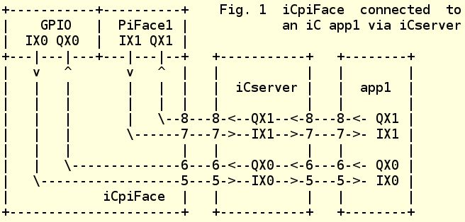
(The numbers at the
boundaries of the three boxes
are iCserver channel numbers)
The advantage of iCpiFace
is, that iC apps are compiled and linked without regard to
where the data originates. The disadvantage is, that I/O speeds are
limited by the speed of transmission of the TCP/IP messages and the
time taken by iCserver. On an RPi 2B a turnaround time of 1.7
ms was measured if an input is switched on a GPIO or PiFace input
and the iC app immediately outputs it to a GPIO or PiFace
output. On an RPi B or B+ this was 5.5 ms. As can be seen in Fig.
1, four separate TCP/IP messages and 2 delays in iCserver are
involved - iCpiFace input to iCserver - iCserver
in to out - iCserver to the iC app input - iC
app output to iCserver - iCserver in to out and
iCserver to the iCpiFace output. This speed is similar
to the speed of a fast mechanical relay and is quite useful for many
control applications. It is still faster than most PLC's.
A second version of the driver
is built directly into the run-time library linked to iC apps
and is therefore much faster. External inputs interrupt the system
directly and act directly in the iC execution network
generating values, which are transmitted directly to external
outputs. Turnaround times of 90 us were measured for GPIO's on an
RPi 2B (170 us on an RPi B or B+) and 450 us for PiFaces on an RPi
B. PiFaces are a bit slower, because speed is limited by the serial
transmissions of the SPI interface.
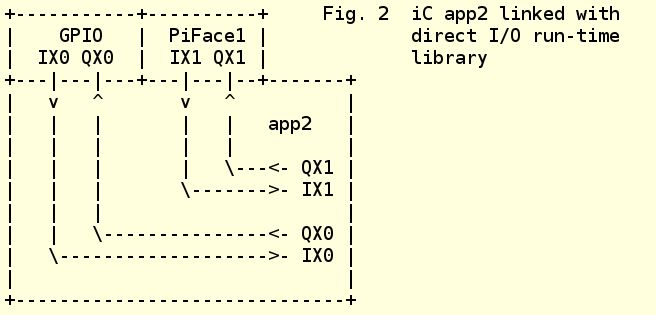
A feature of the direct I/O in
the run-time library is, that any GPIO or PiFace I/O's, which are
not called for in the iC app the library is linked to, will
be handled as TCP/IP I/O's, just like iCpiFace. This
means several iC apps can utilize GPIO and PiFace I/O's. Of
course only one app can use direct high-speed I/O.

The command line switches and
I/O arguments are explained in detail in the iCpiFace
man page and in the -h help output for iCpiFace and
each app linked to the RPi library. These arguments are mostly
identical for both versions. Here are command line calls for the
three examples above.
1) iCpiFace -I IX0.0,18 QX0.0,24
X1:1 # OR
iCpiFace ~IX0.0,18 ~QX0.0,24 ~X1:1 # separate
inversion
# all inputs and outputs active lo
# IX0.0 GPIO
18 external input
# QX0.0 GPIO 24 external output
#
IX1.0-IX1.7 external on PiFace1
# QX1.0-QX1.7 external on
PiFace1
app1 # uses IX0.0, QX0.0 as well as
# IX1.0 -
IX1.7 and QX1.0 - QX1.7
2) app2 -I IX0.0,18 QX0.0,24
X1:1
# all inputs and outputs active lo
# app2 uses all
inputs and outputs
# IX0.0 GPIO 18 direct input
# QX0.0
GPIO 24 direct output
# IX1.0-IX1.7 direct on PiFace1
#
QX1.0-QX1.7 direct on PiFace1
3) app3 -I IX0.0,18 QX0.0,24
X1:1
# all inputs and outputs active lo
# app3 uses
IX1.0 - IX1.7 and
# QX1.0 - QX1.7 only
# IX1.0-IX1.7
direct on PiFace1
# QX1.0-QX1.7 direct on PiFace1
#
IX0.0 GPIO 18 external input
# QX0.0 GPIO 24 external output
app4 # uses IX0.0, QX0.0 only
All calls to the I/O systems
have been done with active lo inputs and outputs. This means that
if a variable is '1' in the iC app, it is 0 volts or lo at
the in or output terminal, which is appropriate for input switches
connected to 0 volts and driving LED's and relays connected to 3.3
volts. If inverting buffers are used the calls can be adjusted
appropriately.
When an app is called with only
direct inputs and outputs, it does not connect to iCserver at
all, which means iClive cannot be used with that app. To
enable iClive, the app must be called with the -L option,
which connects it to iCserver anyway and thus enabling iClive
debugging. Another useful option is -B, which causes iCpiFace
and an app with direct I/O to generate an auxiliary iCbox to
monitor the direct inputs and outputs, which otherwise are only
electrical signals at the I/O terminals.
John E. Wulff 2015.12.28
<immediateC@gmail.com>
Appendix C
Type Definition Table
The following table
defines function types and output types of Gate nodes used in the iC
run-time system. The columns 'os' and 'fos' are useful when
interpreting the compiler generated listings.
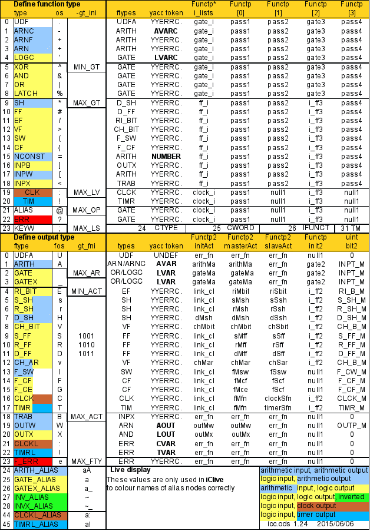